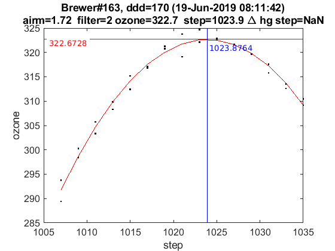
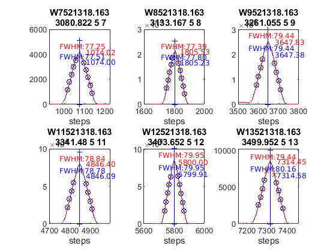

Contents
Brewer Evaluation
clear all;
file_setup='arenos2019_setup';
eval(file_setup);
Cal.n_inst=find(Cal.brw==163);
Cal.file_latex=fullfile('.','latex',Cal.brw_str{Cal.n_inst});
Cal.dir_figs=fullfile('latex',filesep(),Cal.brw_str{Cal.n_inst},...
filesep(),[Cal.brw_str{Cal.n_inst},'_figures'],filesep());
mkdir(Cal.dir_figs);
try
save(Cal.file_save,'-Append','Cal');
catch exception
fprintf('Error: %s\n Initializing data for Brewer %s\n',exception.message,Cal.brw_name{Cal.n_inst});
save(Cal.file_save);
end
ans =
logical
1
ans =
1×1 cell array
{'IZO#185'}
ans =
20×9 cell array
Columns 1 through 5
{'TSK#005'} {[ 5]} {[2]} {[0]} {'005'}
{'IOS#017'} {[ 17]} {[2]} {[0]} {'017'}
{'SCO#033'} {[ 33]} {[2]} {[0]} {'033'}
{'MAD#070'} {[ 70]} {[4]} {[0]} {'070'}
{'UK_#075'} {[ 75]} {[4]} {[0]} {'075'}
{'MUR#117'} {[117]} {[4]} {[0]} {'117'}
{'UK_#126'} {[126]} {[4]} {[0]} {'126'}
{'ARE#150'} {[150]} {[3]} {[0]} {'150'}
{'COR#151'} {[151]} {[4]} {[0]} {'151'}
{'K&Z#158'} {[158]} {[3]} {[0]} {'158'}
{'WRC#163'} {[163]} {[3]} {[0]} {'163'}
{'ZAR#166'} {[166]} {[4]} {[0]} {'166'}
{'UK_#172'} {[172]} {[3]} {[0]} {'172'}
{'JAP#174'} {[174]} {[3]} {[0]} {'174'}
{'IZO#185'} {[185]} {[3]} {[0]} {'185'}
{'MAD#186'} {[186]} {[3]} {[0]} {'186'}
{'CAN#190'} {[190]} {[3]} {[0]} {'190'}
{'TAM#201'} {[201]} {[3]} {[0]} {'201'}
{'DNK#202'} {[202]} {[3]} {[0]} {'202'}
{'DNK#228'} {[228]} {[3]} {[0]} {'228'}
Columns 6 through 9
{'..\005\ICF15117…'} {'..\005\ICF15117…'} {'1838'} {'1838'}
{'..\017\ICF14919…'} {'..\017\ICF14919…'} {'1680'} {'1680'}
{'..\033\ICF15617…'} {'..\033\IOS15617…'} {'2325'} {'2325'}
{'..\070\ICF15617…'} {'..\070\IOS15617…'} {'1685'} {'1685'}
{'..\075\ICF15017…'} {'..\075\ICF15017…'} {'1714'} {'1714'}
{'..\117\ICF15517…'} {'..\117\IOS15517…'} {'1620'} {'1620'}
{'..\126\icf15517…'} {'..\126\ICF17419…'} {'1710'} {'1710'}
{'..\150\ICF15617…'} {'..\150\ICF15617…'} {'0322'} {'0322'}
{'..\151\ICF15317…'} {'..\151\IOS15317…'} {'1880'} {'1880'}
{'..\158\ICF21218…'} {'..\158\ICF21218…'} {'0558'} {'0558'}
{'..\163\ICF21018…'} {'..\163\ICF17519…'} {'0274'} {'0274'}
{'..\166\ICF15217…'} {'..\166\ICF17419…'} {'1955'} {'1955'}
{'..\172\ICF15117…'} {'..\172\ICF15117…'} {'0444'} {'0444'}
{'..\174\ICF20718…'} {'..\174\ICF20718…'} {'0605'} {'0605'}
{'..\185\config18…'} {'..\185\config18…'} {'0365'} {'0367'}
{'..\186\ICF15317…'} {'..\186\IOS15317…'} {'0315'} {'0315'}
{'..\190\ICF11419…'} {'..\190\ICF11419…'} {'0410'} {'0410'}
{'..\201\ICF14315…'} {'..\201\ICF14315…'} {'0320'} {'0320'}
{'..\202\ICF15017…'} {'..\202\ICF15017…'} {'0270'} {'0270'}
{'..\228\ICF15017…'} {'..\228\ICF17319…'} {'0242'} {'0242'}
configuration files
close all
[config_def,TCdef,DTdef,ETCdef,A1def,ATdef]=read_icf(Cal.brw_config_files{Cal.n_inst,2});
[config_orig,TCorig,DTorig,ETCorig,A1orig,ATorig]=read_icf(Cal.brw_config_files{Cal.n_inst,1});
Station.OSC=680;
Station.name='';
Station.lat=67;
Station.long=50;
Station.meanozo=350;
cal_step={}; sc_avg={}; sc_raw={}; Args={};
Sun_scan: Before Campaign
close all
[cal_step{1},sc_avg{1},sc_raw{1},Args{1}]=sc_report(Cal.brw_str{Cal.n_inst},Cal.brw_config_files{Cal.n_inst,1},...
'date_range',datenum(Cal.Date.cal_year,1,[1 159]),...
'CSN_orig',config_orig(14),'OSC',Station.OSC,...
'control_flag',0,'residual_limit',45,...
'hg_time',35,'one_flag',0);
163
warning Date error in file
ans =
-1 12 30 0 0 0
OK->B12119.163
warning Date error in file
ans =
-1 12 30 0 0 0
OK->B12219.163
Warning no depuerd SC
Sun_scan: Campaign
[cal_step{2},sc_avg{2},sc_raw{2},Args{2}]=sc_report(Cal.brw_str{Cal.n_inst},Cal.brw_config_files{Cal.n_inst,2},...
'date_range',datenum(Cal.Date.cal_year,1,Cal.calibration_days{Cal.n_inst,1}([1 end])),...
'CSN_orig',config_def(14),'OSC',Station.OSC,...
'control_flag',0,'residual_limit',45,...
'hg_time',35,'one_flag',1);
163
OK->B17019.163
Warning no depuerd SC

ix=sort(findobj('tag','SC_INDIVIDUAL')); figure(ix); set(get(gca,'title'),'FontSize',8);
printfiles_report(ix',Cal.dir_figs,'aux_pattern',ix,'FontSize',.9,'Width',8.5,'Height',7);
ix=sort(findobj('tag','Final_SC_Calculation'));
if length(ix)>1
Width=8; Height=6;
for i=1:length(ix), figure(ix(i)); set(get(gca,'title'),'FontSize',8); end
else
Width=13; Height=8;
end
printfiles_report(ix',Cal.dir_figs,'aux_pattern',ix,'Width',Width,'Height',Height);
close all
naux =
1
naux =
1
figura =
'163_figures_Final_SC_Calculation_1'
naux =
2
Definicion de variables: SC
if length(cal_step)>1
d_p=[length(cal_step)-1 length(cal_step)]; tags={'','new'};
else
d_p=1; tags={'new'};
end
idx=1; cal_step_error={};
for t=d_p
cal_step_error{t}=round(mean([abs(cal_step{t}(2)-cal_step{t}(3)),abs(cal_step{t}(2)-cal_step{t}(4))]));
latexcmd(fullfile(Cal.file_latex,['cal_wavelengthSC',tags{idx},'_',Cal.brw_str{Cal.n_inst}]),...
['\numSC',tags{idx}],size(sc_avg{t},1),...
['\CALCSTEP',tags{idx}],round(cal_step{t}(1)),...
['\calsteperror',tags{idx}],cal_step_error{t});
idx=idx+1;
end
load(Cal.file_save,'sunscan');sunscan{Cal.n_inst}.cal_step=cal_step;
sunscan{Cal.n_inst}.cal_step_error=cal_step_error;
sunscan{Cal.n_inst}.sc_avg=sc_avg; sunscan{Cal.n_inst}.sc_raw=sc_raw;
sunscan{Cal.n_inst}.info=Args;
save(Cal.file_save,'-APPEND','sunscan');
dsp calibration
res={}; detail={}; DSP_QUAD={}; QUAD_SUM={}; QUAD_DETAIL={};
CUBIC_SUM={}; CUBIC_DETAIL={}; salida={}; CSN_icf={};
l=dir(fullfile('DSP',[Cal.brw_str{Cal.n_inst},'*']));
ldsp=cellstr(cat(1,l.name));
ldsp=ldsp(end-2:end)
for jj=1:length(ldsp)
if jj==length(ldsp),confign=2; else confign=1; end
try
[res{jj},detail{jj},DSP_QUAD{jj},QUAD_SUM{jj},QUAD_DETAIL{jj},...
CUBIC_SUM{jj},CUBIC_DETAIL{jj},salida{jj},CSN_icf{jj},...
]=dspreport(Cal,'dsp_dir',fullfile('DSP',ldsp{jj}),'config_n',1);
catch
warning(sprintf('Error en %s. DSP: %s',Cal.brw_name{Cal.n_inst},ldsp{jj}));
res{jj}=NaN*ones(15,9,2); detail{jj}=NaN*ones(7,6,15,2); QUAD_DETAIL{jj}=NaN;
end
datefile =
736847
now:W1015217.163
now:W3015217.163
now:W7015217.163
now:W8015217.163
now:W9015217.163
now:W11015217.163
now:W12015217.163
now:W1115217.163
now:W3115217.163
now:W7115217.163
now:W8115217.163
now:W9115217.163
now:W11115217.163
now:W12115217.163
now:W13115217.163
now:W3215217.163
now:W7215217.163
now:W8215217.163
now:W9215217.163
now:W11215217.163
now:W12215217.163
now:W13215217.163
now:W3315217.163
now:W7315217.163
now:W8315217.163
now:W9315217.163
now:W11315217.163
now:W12315217.163
now:W13315217.163
now:W7415217.163
now:W8415217.163
now:W9415217.163
now:W11415217.163
now:W12415217.163
now:W13415217.163
now:W7515217.163
now:W8515217.163
now:W9515217.163
now:W11515217.163
now:W12515217.163
now:W13515217.163
now:W14515217.163
lines_dsp_15117__163
saving alldsp to DSP/163_17_152/alldsp_15117_163.163
eliminamos la linea slit 2 3403.652000 0.291447
eliminamos la linea slit 6 3403.652000 0.151006
eliminamos la linea slit 5 3403.652000 0.170460
eliminamos la linea slit 4 3403.652000 0.221460
eliminamos la linea slit 3 3403.652000 0.218254
eliminamos la linea slit 2 3341.480000 0.141168
eliminamos la linea slit 1 3261.055000 0.126503
eliminamos la linea slit 2 3261.055000 0.217727
eliminamos la linea slit 1 2967.280000 -0.123361
eliminamos la linea slit 2 2967.280000 -0.174325
saving normaldsp to DSP/163_17_152/dspnorm_15117_163.163 as brewer compatible file
Use polyval(pwl(2,:),wl) for calculating normal wavelengths
Saving ozonecoeffs to DSP/163_17_152/opos15117_163.163
1016 WL(A) 3031.61 3062.63 3100.09 3134.64 3167.66 3199.74
Res(A) 11.33 11.21 10.99 11.12 11.00 10.83
O3abs(1/cm) 2.6097 1.7877 1.0065 0.6778 0.3749 0.2954 O3: 0.3451
Daumt O3abs(1/cm) 2.6168 1.7820 0.9984 0.6713 0.3681 0.2957 O3: 0.3556
So2abs(1/cm) 3.5124 5.5118 2.3677 1.9604 1.0489 0.6193
Bremen O3abs(1/cm) 2.6201 1.7854 1.0040 0.6809 0.3733 0.2969 O3: 0.3470
Nicolet 1e4*Rayabs(1/cm) 5052.8 4834.8 4587.3 4373.3 4180.4 4003.4 R: 9.5659
Bates(fix) 1e4*Rayabs(1/cm) 0.0 4870.0 4620.0 4410.0 4220.0 4040.0 R: -1.0000
Bodhaine 1e4*Rayabs(1/cm) 5049.3 4832.9 4586.8 4373.9 4182.0 4005.7 R: 9.1932
I0(mW m^-2nm^-1) 11703.38 9412.92 7329.20 4915.78 4055.36 3223.44 ETC: 1429
Ozone offset due to Rayleigh (RayCOeff/O3Coeff): -2.8 DU
Ozone offset due to Rayleigh (Bodhaine): -3.0 DU
Ratio Ozone for So2(A3)= 1.1584, So2/O3(A2)= 2.6657
O3 factor from Bass & Paur to Daumont = 0.9704
O3 factor from Bass & Paur to Bremen = 0.9944
1017 WL(A) 3031.69 3062.70 3100.16 3134.71 3167.74 3199.81
Res(A) 11.33 11.21 10.99 11.12 11.00 10.83
O3abs(1/cm) 2.6070 1.7863 1.0062 0.6776 0.3749 0.2950 O3: 0.3440
Daumt O3abs(1/cm) 2.6141 1.7807 0.9981 0.6712 0.3681 0.2954 O3: 0.3547
So2abs(1/cm) 3.4940 5.5363 2.3749 1.9490 1.0502 0.6171
Bremen O3abs(1/cm) 2.6175 1.7839 1.0037 0.6807 0.3733 0.2965 O3: 0.3461
Nicolet 1e4*Rayabs(1/cm) 5052.3 4834.4 4586.9 4372.9 4180.0 4003.1 R: 9.5635
Bates(fix) 1e4*Rayabs(1/cm) 0.0 4870.0 4620.0 4410.0 4220.0 4040.0 R: -1.0000
Bodhaine 1e4*Rayabs(1/cm) 5048.8 4832.4 4586.4 4373.5 4181.6 4005.4 R: 9.1910
I0(mW m^-2nm^-1) 11697.23 9406.71 7305.20 4911.87 4045.43 3213.81 ETC: 1413
Ozone offset due to Rayleigh (RayCOeff/O3Coeff): -2.8 DU
Ozone offset due to Rayleigh (Bodhaine): -3.0 DU
Ratio Ozone for So2(A3)= 1.1555, So2/O3(A2)= 2.6833
O3 factor from Bass & Paur to Daumont = 0.9699
O3 factor from Bass & Paur to Bremen = 0.9939
1018 WL(A) 3031.76 3062.77 3100.24 3134.78 3167.81 3199.88
Res(A) 11.33 11.21 10.99 11.12 11.00 10.83
O3abs(1/cm) 2.6045 1.7848 1.0059 0.6773 0.3749 0.2945 O3: 0.3430
Daumt O3abs(1/cm) 2.6114 1.7793 0.9977 0.6711 0.3681 0.2950 O3: 0.3538
So2abs(1/cm) 3.4757 5.5608 2.3821 1.9375 1.0514 0.6150
Bremen O3abs(1/cm) 2.6149 1.7825 1.0033 0.6806 0.3733 0.2962 O3: 0.3452
Nicolet 1e4*Rayabs(1/cm) 5051.7 4833.9 4586.4 4372.4 4179.6 4002.7 R: 9.5612
Bates(fix) 1e4*Rayabs(1/cm) 0.0 4870.0 4620.0 4410.0 4220.0 4040.0 R: -1.0000
Bodhaine 1e4*Rayabs(1/cm) 5048.3 4831.9 4585.9 4373.1 4181.2 4005.0 R: 9.1921
I0(mW m^-2nm^-1) 11691.09 9400.51 7281.34 4907.96 4035.53 3204.19 ETC: 1396
Ozone offset due to Rayleigh (RayCOeff/O3Coeff): -2.8 DU
Ozone offset due to Rayleigh (Bodhaine): -3.0 DU
Ratio Ozone for So2(A3)= 1.1524, So2/O3(A2)= 2.7011
O3 factor from Bass & Paur to Daumont = 0.9693
O3 factor from Bass & Paur to Bremen = 0.9935
1019 WL(A) 3031.83 3062.85 3100.31 3134.85 3167.88 3199.95
Res(A) 11.33 11.21 10.99 11.12 11.00 10.83
O3abs(1/cm) 2.6020 1.7834 1.0056 0.6771 0.3750 0.2940 O3: 0.3419
Daumt O3abs(1/cm) 2.6088 1.7779 0.9974 0.6710 0.3681 0.2947 O3: 0.3529
So2abs(1/cm) 3.4593 5.5849 2.3894 1.9259 1.0527 0.6128
Bremen O3abs(1/cm) 2.6124 1.7810 1.0029 0.6804 0.3733 0.2958 O3: 0.3442
Nicolet 1e4*Rayabs(1/cm) 5051.2 4833.4 4586.0 4372.0 4179.2 4002.3 R: 9.5588
Bates(fix) 1e4*Rayabs(1/cm) 0.0 4870.0 4620.0 4410.0 4220.0 4040.0 R: -1.0000
Bodhaine 1e4*Rayabs(1/cm) 5047.7 4831.4 4585.5 4372.7 4180.8 4004.6 R: 9.1882
I0(mW m^-2nm^-1) 11684.96 9394.32 7257.60 4904.06 4025.64 3194.59 ETC: 1380
Ozone offset due to Rayleigh (RayCOeff/O3Coeff): -2.8 DU
Ozone offset due to Rayleigh (Bodhaine): -3.0 DU
Ratio Ozone for So2(A3)= 1.1493, So2/O3(A2)= 2.7188
O3 factor from Bass & Paur to Daumont = 0.9690
O3 factor from Bass & Paur to Bremen = 0.9933
1020 WL(A) 3031.91 3062.92 3100.38 3134.92 3167.95 3200.02
Res(A) 11.33 11.21 10.99 11.12 11.00 10.83
O3abs(1/cm) 2.5994 1.7818 1.0053 0.6768 0.3750 0.2935 O3: 0.3409
Daumt O3abs(1/cm) 2.6062 1.7765 0.9970 0.6708 0.3681 0.2943 O3: 0.3519
So2abs(1/cm) 3.4433 5.6081 2.3967 1.9142 1.0539 0.6106
Bremen O3abs(1/cm) 2.6098 1.7795 1.0026 0.6802 0.3734 0.2954 O3: 0.3432
Nicolet 1e4*Rayabs(1/cm) 5050.7 4832.9 4585.5 4371.6 4178.9 4002.0 R: 9.5565
Bates(fix) 1e4*Rayabs(1/cm) 0.0 4870.0 4620.0 4410.0 4220.0 4040.0 R: -1.0000
Bodhaine 1e4*Rayabs(1/cm) 5047.2 4830.9 4585.0 4372.2 4180.4 4004.2 R: 9.1834
I0(mW m^-2nm^-1) 11678.84 9388.13 7233.99 4900.15 4015.78 3185.02 ETC: 1364
Ozone offset due to Rayleigh (RayCOeff/O3Coeff): -2.8 DU
Ozone offset due to Rayleigh (Bodhaine): -3.0 DU
Ratio Ozone for So2(A3)= 1.1462, So2/O3(A2)= 2.7358
O3 factor from Bass & Paur to Daumont = 0.9688
O3 factor from Bass & Paur to Bremen = 0.9933
1021 WL(A) 3031.98 3062.99 3100.45 3134.99 3168.02 3200.09
Res(A) 11.33 11.21 10.99 11.12 11.00 10.83
O3abs(1/cm) 2.5968 1.7802 1.0050 0.6764 0.3750 0.2931 O3: 0.3399
Daumt O3abs(1/cm) 2.6036 1.7751 0.9967 0.6707 0.3682 0.2939 O3: 0.3509
So2abs(1/cm) 3.4274 5.6295 2.4046 1.9026 1.0551 0.6083
Bremen O3abs(1/cm) 2.6073 1.7780 1.0022 0.6800 0.3734 0.2950 O3: 0.3422
Nicolet 1e4*Rayabs(1/cm) 5050.1 4832.4 4585.0 4371.1 4178.5 4001.6 R: 9.5541
Bates(fix) 1e4*Rayabs(1/cm) 0.0 4870.0 4620.0 4410.0 4220.0 4040.0 R: -1.0000
Bodhaine 1e4*Rayabs(1/cm) 5046.7 4830.4 4584.6 4371.8 4180.0 4003.9 R: 9.1849
I0(mW m^-2nm^-1) 11672.73 9381.96 7210.51 4896.26 4005.94 3175.46 ETC: 1348
Ozone offset due to Rayleigh (RayCOeff/O3Coeff): -2.8 DU
Ozone offset due to Rayleigh (Bodhaine): -3.0 DU
Ratio Ozone for So2(A3)= 1.1429, So2/O3(A2)= 2.7516
O3 factor from Bass & Paur to Daumont = 0.9687
O3 factor from Bass & Paur to Bremen = 0.9934
1022 WL(A) 3032.05 3063.06 3100.52 3135.07 3168.09 3200.16
Res(A) 11.33 11.21 10.99 11.12 11.00 10.83
O3abs(1/cm) 2.5942 1.7785 1.0047 0.6761 0.3751 0.2925 O3: 0.3388
Daumt O3abs(1/cm) 2.6011 1.7737 0.9963 0.6705 0.3682 0.2935 O3: 0.3498
So2abs(1/cm) 3.4118 5.6508 2.4127 1.8910 1.0563 0.6059
Bremen O3abs(1/cm) 2.6049 1.7764 1.0019 0.6798 0.3735 0.2945 O3: 0.3411
Nicolet 1e4*Rayabs(1/cm) 5049.6 4831.9 4584.6 4370.7 4178.1 4001.2 R: 9.5518
Bates(fix) 1e4*Rayabs(1/cm) 0.0 4870.0 4620.0 4410.0 4220.0 4040.0 R: -1.0000
Bodhaine 1e4*Rayabs(1/cm) 5046.2 4829.9 4584.1 4371.4 4179.6 4003.5 R: 9.1821
I0(mW m^-2nm^-1) 11666.62 9375.79 7190.72 4892.36 3996.12 3165.93 ETC: 1335
Ozone offset due to Rayleigh (RayCOeff/O3Coeff): -2.8 DU
Ozone offset due to Rayleigh (Bodhaine): -3.0 DU
Ratio Ozone for So2(A3)= 1.1391, So2/O3(A2)= 2.7681
O3 factor from Bass & Paur to Daumont = 0.9683
O3 factor from Bass & Paur to Bremen = 0.9931
1023 WL(A) 3032.13 3063.14 3100.60 3135.14 3168.16 3200.23
Res(A) 11.33 11.21 10.99 11.12 11.00 10.83
O3abs(1/cm) 2.5916 1.7769 1.0044 0.6757 0.3752 0.2920 O3: 0.3375
Daumt O3abs(1/cm) 2.5986 1.7722 0.9960 0.6703 0.3683 0.2930 O3: 0.3487
So2abs(1/cm) 3.3977 5.6717 2.4207 1.8794 1.0575 0.6036
Bremen O3abs(1/cm) 2.6024 1.7749 1.0015 0.6795 0.3735 0.2941 O3: 0.3400
Nicolet 1e4*Rayabs(1/cm) 5049.1 4831.4 4584.1 4370.3 4177.7 4000.8 R: 9.5494
Bates(fix) 1e4*Rayabs(1/cm) 0.0 4870.0 4620.0 4410.0 4220.0 4040.0 R: -1.0000
Bodhaine 1e4*Rayabs(1/cm) 5045.6 4829.4 4583.6 4371.0 4179.2 4003.1 R: 9.1768
I0(mW m^-2nm^-1) 11660.52 9369.63 7176.88 4888.47 3986.33 3156.41 ETC: 1329
Ozone offset due to Rayleigh (RayCOeff/O3Coeff): -2.8 DU
Ozone offset due to Rayleigh (Bodhaine): -3.0 DU
Ratio Ozone for So2(A3)= 1.1354, So2/O3(A2)= 2.7847
O3 factor from Bass & Paur to Daumont = 0.9679
O3 factor from Bass & Paur to Bremen = 0.9929
1024 WL(A) 3032.20 3063.21 3100.67 3135.21 3168.23 3200.29
Res(A) 11.33 11.21 10.99 11.12 11.00 10.83
O3abs(1/cm) 2.5890 1.7753 1.0041 0.6753 0.3753 0.2914 O3: 0.3363
Daumt O3abs(1/cm) 2.5961 1.7707 0.9956 0.6700 0.3683 0.2926 O3: 0.3476
So2abs(1/cm) 3.3843 5.6918 2.4288 1.8675 1.0587 0.6012
Bremen O3abs(1/cm) 2.6000 1.7733 1.0012 0.6792 0.3736 0.2936 O3: 0.3388
Nicolet 1e4*Rayabs(1/cm) 5048.5 4830.9 4583.7 4369.9 4177.3 4000.5 R: 9.5471
Bates(fix) 1e4*Rayabs(1/cm) 0.0 4870.0 4620.0 4410.0 4220.0 4040.0 R: -1.0000
Bodhaine 1e4*Rayabs(1/cm) 5045.1 4828.9 4583.2 4370.5 4178.8 4002.8 R: 9.1768
I0(mW m^-2nm^-1) 11654.43 9363.48 7163.42 4884.58 3976.55 3146.92 ETC: 1322
Ozone offset due to Rayleigh (RayCOeff/O3Coeff): -2.8 DU
Ozone offset due to Rayleigh (Bodhaine): -3.0 DU
Ratio Ozone for So2(A3)= 1.1316, So2/O3(A2)= 2.8007
O3 factor from Bass & Paur to Daumont = 0.9674
O3 factor from Bass & Paur to Bremen = 0.9925
1025 WL(A) 3032.27 3063.28 3100.74 3135.28 3168.30 3200.36
Res(A) 11.33 11.21 10.99 11.12 11.00 10.83
O3abs(1/cm) 2.5867 1.7737 1.0038 0.6748 0.3753 0.2908 O3: 0.3349
Daumt O3abs(1/cm) 2.5936 1.7692 0.9953 0.6698 0.3684 0.2921 O3: 0.3464
So2abs(1/cm) 3.3711 5.7097 2.4373 1.8558 1.0598 0.5988
Bremen O3abs(1/cm) 2.5976 1.7717 1.0008 0.6789 0.3737 0.2931 O3: 0.3376
Nicolet 1e4*Rayabs(1/cm) 5048.0 4830.4 4583.2 4369.4 4176.9 4000.1 R: 9.5447
Bates(fix) 1e4*Rayabs(1/cm) 0.0 4870.0 4620.0 4410.0 4220.0 4040.0 R: -1.0000
Bodhaine 1e4*Rayabs(1/cm) 5044.6 4828.4 4582.7 4370.1 4178.4 4002.4 R: 9.1751
I0(mW m^-2nm^-1) 11648.35 9357.34 7149.15 4880.69 3966.80 3137.45 ETC: 1315
Ozone offset due to Rayleigh (RayCOeff/O3Coeff): -2.8 DU
Ozone offset due to Rayleigh (Bodhaine): -3.0 DU
Ratio Ozone for So2(A3)= 1.1277, So2/O3(A2)= 2.8151
O3 factor from Bass & Paur to Daumont = 0.9669
O3 factor from Bass & Paur to Bremen = 0.9921
1026 WL(A) 3032.35 3063.36 3100.81 3135.35 3168.37 3200.43
Res(A) 11.33 11.21 10.99 11.12 11.00 10.83
O3abs(1/cm) 2.5844 1.7721 1.0035 0.6743 0.3754 0.2902 O3: 0.3337
Daumt O3abs(1/cm) 2.5912 1.7677 0.9949 0.6695 0.3685 0.2916 O3: 0.3452
So2abs(1/cm) 3.3582 5.7276 2.4462 1.8441 1.0610 0.5964
Bremen O3abs(1/cm) 2.5953 1.7701 1.0005 0.6786 0.3738 0.2926 O3: 0.3363
Nicolet 1e4*Rayabs(1/cm) 5047.5 4829.9 4582.7 4369.0 4176.5 3999.7 R: 9.5424
Bates(fix) 1e4*Rayabs(1/cm) 0.0 4870.0 4620.0 4410.0 4220.0 4040.0 R: -1.0000
Bodhaine 1e4*Rayabs(1/cm) 5044.0 4827.9 4582.3 4369.7 4178.0 4002.0 R: 9.1719
I0(mW m^-2nm^-1) 11642.28 9351.21 7132.84 4876.81 3957.07 3129.87 ETC: 1310
Ozone offset due to Rayleigh (RayCOeff/O3Coeff): -2.9 DU
Ozone offset due to Rayleigh (Bodhaine): -3.0 DU
Ratio Ozone for So2(A3)= 1.1239, So2/O3(A2)= 2.8295
O3 factor from Bass & Paur to Daumont = 0.9667
O3 factor from Bass & Paur to Bremen = 0.9921
saving powfiu7 to DSP/163_17_152/dsp_15117_163.163
freecoef =
4
freecoef =
9
freecoef =
9
freecoef =
9
freecoef =
9
freecoef =
9
freecoef =
9
freecoef =
9
freecoef =
9
freecoef =
9
saving data to file:DSP/163_17_152/dsp_15117_163.163
Use brstps2 to calculate steps and wavelengths
Saving ozonecoeffs to DSP/163_17_152/opos_pow7_15117_163.163
1016 WL(A) 3031.75 3062.78 3100.21 3134.74 3167.69 3199.72
Res(A) 11.32 11.20 10.99 11.11 11.00 10.81
O3abs(1/cm) 2.6048 1.7848 1.0060 0.6775 0.3749 0.2956 O3: 0.3450
Daumt O3abs(1/cm) 2.6118 1.7793 0.9978 0.6712 0.3681 0.2958 O3: 0.3553
So2abs(1/cm) 3.4777 5.5633 2.3797 1.9439 1.0494 0.6199
Bremen O3abs(1/cm) 2.6152 1.7824 1.0034 0.6807 0.3733 0.2970 O3: 0.3467
Nicolet 1e4*Rayabs(1/cm) 5051.8 4833.8 4586.6 4372.7 4180.3 4003.5 R: 9.6220
Bates(fix) 1e4*Rayabs(1/cm) 0.0 4870.0 4620.0 4410.0 4220.0 4040.0 R: -1.0000
Bodhaine 1e4*Rayabs(1/cm) 5048.3 4831.8 4586.1 4373.3 4181.9 4005.8 R: 9.2512
I0(mW m^-2nm^-1) 11691.84 9400.10 7289.49 4910.07 4051.45 3225.93 ETC: 1405
Ozone offset due to Rayleigh (RayCOeff/O3Coeff): -2.8 DU
Ozone offset due to Rayleigh (Bodhaine): -3.0 DU
Ratio Ozone for So2(A3)= 1.1561, So2/O3(A2)= 2.7155
O3 factor from Bass & Paur to Daumont = 0.9710
O3 factor from Bass & Paur to Bremen = 0.9949
1017 WL(A) 3031.82 3062.85 3100.28 3134.81 3167.76 3199.79
Res(A) 11.32 11.20 10.99 11.11 11.00 10.81
O3abs(1/cm) 2.6023 1.7833 1.0057 0.6772 0.3749 0.2951 O3: 0.3440
Daumt O3abs(1/cm) 2.6091 1.7779 0.9975 0.6711 0.3681 0.2955 O3: 0.3544
So2abs(1/cm) 3.4611 5.5875 2.3869 1.9324 1.0507 0.6178
Bremen O3abs(1/cm) 2.6127 1.7809 1.0031 0.6806 0.3733 0.2966 O3: 0.3459
Nicolet 1e4*Rayabs(1/cm) 5051.3 4833.3 4586.1 4372.2 4179.9 4003.2 R: 9.6197
Bates(fix) 1e4*Rayabs(1/cm) 0.0 4870.0 4620.0 4410.0 4220.0 4040.0 R: -1.0000
Bodhaine 1e4*Rayabs(1/cm) 5047.8 4831.3 4585.6 4372.9 4181.5 4005.5 R: 9.2496
I0(mW m^-2nm^-1) 11685.70 9393.91 7265.71 4906.16 4041.52 3216.26 ETC: 1389
Ozone offset due to Rayleigh (RayCOeff/O3Coeff): -2.8 DU
Ozone offset due to Rayleigh (Bodhaine): -3.0 DU
Ratio Ozone for So2(A3)= 1.1530, So2/O3(A2)= 2.7332
O3 factor from Bass & Paur to Daumont = 0.9705
O3 factor from Bass & Paur to Bremen = 0.9945
1018 WL(A) 3031.90 3062.92 3100.36 3134.88 3167.83 3199.86
Res(A) 11.32 11.20 10.99 11.11 11.00 10.81
O3abs(1/cm) 2.5997 1.7818 1.0054 0.6770 0.3749 0.2946 O3: 0.3429
Daumt O3abs(1/cm) 2.6065 1.7765 0.9971 0.6709 0.3681 0.2951 O3: 0.3535
So2abs(1/cm) 3.4450 5.6104 2.3942 1.9207 1.0519 0.6156
Bremen O3abs(1/cm) 2.6101 1.7794 1.0027 0.6804 0.3733 0.2963 O3: 0.3450
Nicolet 1e4*Rayabs(1/cm) 5050.7 4832.8 4585.7 4371.8 4179.5 4002.8 R: 9.6173
Bates(fix) 1e4*Rayabs(1/cm) 0.0 4870.0 4620.0 4410.0 4220.0 4040.0 R: -1.0000
Bodhaine 1e4*Rayabs(1/cm) 5047.3 4830.8 4585.2 4372.5 4181.1 4005.1 R: 9.2469
I0(mW m^-2nm^-1) 11679.58 9387.72 7242.07 4902.25 4031.62 3206.62 ETC: 1373
Ozone offset due to Rayleigh (RayCOeff/O3Coeff): -2.8 DU
Ozone offset due to Rayleigh (Bodhaine): -3.0 DU
Ratio Ozone for So2(A3)= 1.1498, So2/O3(A2)= 2.7502
O3 factor from Bass & Paur to Daumont = 0.9699
O3 factor from Bass & Paur to Bremen = 0.9941
1019 WL(A) 3031.97 3063.00 3100.43 3134.96 3167.90 3199.93
Res(A) 11.32 11.20 10.99 11.11 11.00 10.81
O3abs(1/cm) 2.5971 1.7801 1.0051 0.6767 0.3750 0.2941 O3: 0.3419
Daumt O3abs(1/cm) 2.6039 1.7751 0.9968 0.6708 0.3681 0.2948 O3: 0.3526
So2abs(1/cm) 3.4291 5.6317 2.4018 1.9091 1.0531 0.6134
Bremen O3abs(1/cm) 2.6076 1.7779 1.0024 0.6802 0.3733 0.2959 O3: 0.3440
Nicolet 1e4*Rayabs(1/cm) 5050.2 4832.3 4585.2 4371.4 4179.1 4002.4 R: 9.6149
Bates(fix) 1e4*Rayabs(1/cm) 0.0 4870.0 4620.0 4410.0 4220.0 4040.0 R: -1.0000
Bodhaine 1e4*Rayabs(1/cm) 5046.7 4830.4 4584.7 4372.0 4180.7 4004.7 R: 9.2443
I0(mW m^-2nm^-1) 11673.46 9381.53 7218.55 4898.34 4021.74 3197.00 ETC: 1356
Ozone offset due to Rayleigh (RayCOeff/O3Coeff): -2.8 DU
Ozone offset due to Rayleigh (Bodhaine): -3.0 DU
Ratio Ozone for So2(A3)= 1.1465, So2/O3(A2)= 2.7662
O3 factor from Bass & Paur to Daumont = 0.9696
O3 factor from Bass & Paur to Bremen = 0.9939
1020 WL(A) 3032.05 3063.07 3100.50 3135.03 3167.97 3200.00
Res(A) 11.32 11.20 10.99 11.11 11.00 10.81
O3abs(1/cm) 2.5945 1.7785 1.0048 0.6763 0.3750 0.2937 O3: 0.3409
Daumt O3abs(1/cm) 2.6014 1.7736 0.9964 0.6706 0.3681 0.2944 O3: 0.3517
So2abs(1/cm) 3.4135 5.6531 2.4099 1.8975 1.0544 0.6112
Bremen O3abs(1/cm) 2.6052 1.7764 1.0020 0.6799 0.3734 0.2955 O3: 0.3430
Nicolet 1e4*Rayabs(1/cm) 5049.7 4831.8 4584.7 4371.0 4178.7 4002.1 R: 9.6125
Bates(fix) 1e4*Rayabs(1/cm) 0.0 4870.0 4620.0 4410.0 4220.0 4040.0 R: -1.0000
Bodhaine 1e4*Rayabs(1/cm) 5046.2 4829.9 4584.3 4371.6 4180.3 4004.3 R: 9.2425
I0(mW m^-2nm^-1) 11667.36 9375.36 7195.47 4894.44 4011.88 3187.40 ETC: 1341
Ozone offset due to Rayleigh (RayCOeff/O3Coeff): -2.8 DU
Ozone offset due to Rayleigh (Bodhaine): -3.0 DU
Ratio Ozone for So2(A3)= 1.1432, So2/O3(A2)= 2.7822
O3 factor from Bass & Paur to Daumont = 0.9695
O3 factor from Bass & Paur to Bremen = 0.9939
1021 WL(A) 3032.12 3063.14 3100.57 3135.10 3168.04 3200.07
Res(A) 11.32 11.20 10.99 11.11 11.00 10.81
O3abs(1/cm) 2.5919 1.7768 1.0045 0.6759 0.3751 0.2932 O3: 0.3399
Daumt O3abs(1/cm) 2.5988 1.7722 0.9961 0.6704 0.3682 0.2940 O3: 0.3507
So2abs(1/cm) 3.3992 5.6741 2.4180 1.8858 1.0556 0.6089
Bremen O3abs(1/cm) 2.6027 1.7748 1.0017 0.6797 0.3734 0.2951 O3: 0.3420
Nicolet 1e4*Rayabs(1/cm) 5049.1 4831.3 4584.3 4370.5 4178.3 4001.7 R: 9.6102
Bates(fix) 1e4*Rayabs(1/cm) 0.0 4870.0 4620.0 4410.0 4220.0 4040.0 R: -1.0000
Bodhaine 1e4*Rayabs(1/cm) 5045.7 4829.4 4583.8 4371.2 4179.9 4004.0 R: 9.2400
I0(mW m^-2nm^-1) 11661.26 9369.20 7181.51 4890.54 4002.04 3177.81 ETC: 1334
Ozone offset due to Rayleigh (RayCOeff/O3Coeff): -2.8 DU
Ozone offset due to Rayleigh (Bodhaine): -3.0 DU
Ratio Ozone for So2(A3)= 1.1399, So2/O3(A2)= 2.7979
O3 factor from Bass & Paur to Daumont = 0.9693
O3 factor from Bass & Paur to Bremen = 0.9939
1022 WL(A) 3032.19 3063.21 3100.64 3135.17 3168.11 3200.14
Res(A) 11.32 11.20 10.99 11.11 11.00 10.81
O3abs(1/cm) 2.5893 1.7753 1.0042 0.6755 0.3751 0.2927 O3: 0.3388
Daumt O3abs(1/cm) 2.5963 1.7707 0.9957 0.6702 0.3682 0.2936 O3: 0.3496
So2abs(1/cm) 3.3858 5.6938 2.4260 1.8740 1.0568 0.6066
Bremen O3abs(1/cm) 2.6003 1.7733 1.0013 0.6794 0.3735 0.2947 O3: 0.3409
Nicolet 1e4*Rayabs(1/cm) 5048.6 4830.8 4583.8 4370.1 4177.9 4001.3 R: 9.6078
Bates(fix) 1e4*Rayabs(1/cm) 0.0 4870.0 4620.0 4410.0 4220.0 4040.0 R: -1.0000
Bodhaine 1e4*Rayabs(1/cm) 5045.2 4828.9 4583.3 4370.8 4179.5 4003.6 R: 9.2373
I0(mW m^-2nm^-1) 11655.16 9363.04 7167.92 4886.64 3992.23 3168.25 ETC: 1328
Ozone offset due to Rayleigh (RayCOeff/O3Coeff): -2.8 DU
Ozone offset due to Rayleigh (Bodhaine): -3.0 DU
Ratio Ozone for So2(A3)= 1.1364, So2/O3(A2)= 2.8129
O3 factor from Bass & Paur to Daumont = 0.9690
O3 factor from Bass & Paur to Bremen = 0.9937
1023 WL(A) 3032.27 3063.29 3100.72 3135.24 3168.18 3200.21
Res(A) 11.32 11.20 10.99 11.11 11.00 10.81
O3abs(1/cm) 2.5870 1.7737 1.0039 0.6751 0.3752 0.2922 O3: 0.3376
Daumt O3abs(1/cm) 2.5939 1.7692 0.9954 0.6699 0.3683 0.2932 O3: 0.3485
So2abs(1/cm) 3.3725 5.7118 2.4343 1.8623 1.0580 0.6043
Bremen O3abs(1/cm) 2.5979 1.7717 1.0010 0.6791 0.3735 0.2942 O3: 0.3398
Nicolet 1e4*Rayabs(1/cm) 5048.1 4830.3 4583.4 4369.7 4177.5 4000.9 R: 9.6054
Bates(fix) 1e4*Rayabs(1/cm) 0.0 4870.0 4620.0 4410.0 4220.0 4040.0 R: -1.0000
Bodhaine 1e4*Rayabs(1/cm) 5044.6 4828.4 4582.9 4370.4 4179.1 4003.2 R: 9.2353
I0(mW m^-2nm^-1) 11649.08 9356.89 7154.68 4882.75 3982.44 3158.71 ETC: 1322
Ozone offset due to Rayleigh (RayCOeff/O3Coeff): -2.8 DU
Ozone offset due to Rayleigh (Bodhaine): -3.0 DU
Ratio Ozone for So2(A3)= 1.1327, So2/O3(A2)= 2.8268
O3 factor from Bass & Paur to Daumont = 0.9686
O3 factor from Bass & Paur to Bremen = 0.9935
1024 WL(A) 3032.34 3063.36 3100.79 3135.31 3168.25 3200.28
Res(A) 11.32 11.20 10.99 11.11 11.00 10.81
O3abs(1/cm) 2.5847 1.7721 1.0036 0.6746 0.3753 0.2916 O3: 0.3363
Daumt O3abs(1/cm) 2.5914 1.7677 0.9950 0.6697 0.3684 0.2927 O3: 0.3474
So2abs(1/cm) 3.3595 5.7297 2.4431 1.8506 1.0591 0.6019
Bremen O3abs(1/cm) 2.5955 1.7701 1.0006 0.6788 0.3736 0.2938 O3: 0.3387
Nicolet 1e4*Rayabs(1/cm) 5047.5 4829.9 4582.9 4369.3 4177.1 4000.6 R: 9.6031
Bates(fix) 1e4*Rayabs(1/cm) 0.0 4870.0 4620.0 4410.0 4220.0 4040.0 R: -1.0000
Bodhaine 1e4*Rayabs(1/cm) 5044.1 4827.9 4582.4 4369.9 4178.7 4002.9 R: 9.2332
I0(mW m^-2nm^-1) 11643.01 9350.75 7138.36 4878.86 3972.67 3149.19 ETC: 1313
Ozone offset due to Rayleigh (RayCOeff/O3Coeff): -2.9 DU
Ozone offset due to Rayleigh (Bodhaine): -3.0 DU
Ratio Ozone for So2(A3)= 1.1289, So2/O3(A2)= 2.8414
O3 factor from Bass & Paur to Daumont = 0.9681
O3 factor from Bass & Paur to Bremen = 0.9931
1025 WL(A) 3032.41 3063.43 3100.86 3135.38 3168.32 3200.35
Res(A) 11.32 11.20 10.99 11.11 11.00 10.81
O3abs(1/cm) 2.5823 1.7704 1.0033 0.6742 0.3754 0.2910 O3: 0.3350
Daumt O3abs(1/cm) 2.5890 1.7662 0.9947 0.6694 0.3684 0.2922 O3: 0.3462
So2abs(1/cm) 3.3477 5.7473 2.4520 1.8389 1.0603 0.5995
Bremen O3abs(1/cm) 2.5932 1.7684 1.0003 0.6784 0.3737 0.2933 O3: 0.3375
Nicolet 1e4*Rayabs(1/cm) 5047.0 4829.4 4582.4 4368.8 4176.7 4000.2 R: 9.6007
Bates(fix) 1e4*Rayabs(1/cm) 0.0 4870.0 4620.0 4410.0 4220.0 4040.0 R: -1.0000
Bodhaine 1e4*Rayabs(1/cm) 5043.6 4827.4 4582.0 4369.5 4178.3 4002.5 R: 9.2304
I0(mW m^-2nm^-1) 11636.94 9344.62 7122.10 4874.98 3962.92 3139.69 ETC: 1304
Ozone offset due to Rayleigh (RayCOeff/O3Coeff): -2.9 DU
Ozone offset due to Rayleigh (Bodhaine): -3.1 DU
Ratio Ozone for So2(A3)= 1.1249, So2/O3(A2)= 2.8559
O3 factor from Bass & Paur to Daumont = 0.9676
O3 factor from Bass & Paur to Bremen = 0.9927
1026 WL(A) 3032.49 3063.50 3100.93 3135.45 3168.39 3200.41
Res(A) 11.32 11.20 10.99 11.11 11.00 10.81
O3abs(1/cm) 2.5799 1.7686 1.0029 0.6737 0.3755 0.2904 O3: 0.3337
Daumt O3abs(1/cm) 2.5866 1.7646 0.9943 0.6690 0.3685 0.2918 O3: 0.3450
So2abs(1/cm) 3.3369 5.7637 2.4608 1.8271 1.0614 0.5971
Bremen O3abs(1/cm) 2.5909 1.7668 0.9999 0.6781 0.3738 0.2928 O3: 0.3362
Nicolet 1e4*Rayabs(1/cm) 5046.5 4828.9 4582.0 4368.4 4176.3 3999.8 R: 9.5984
Bates(fix) 1e4*Rayabs(1/cm) 0.0 4870.0 4620.0 4410.0 4220.0 4040.0 R: -1.0000
Bodhaine 1e4*Rayabs(1/cm) 5043.1 4826.9 4581.5 4369.1 4177.9 4002.1 R: 9.2289
I0(mW m^-2nm^-1) 11630.88 9338.50 7105.91 4871.09 3953.19 3130.99 ETC: 1296
Ozone offset due to Rayleigh (RayCOeff/O3Coeff): -2.9 DU
Ozone offset due to Rayleigh (Bodhaine): -3.1 DU
Ratio Ozone for So2(A3)= 1.1208, So2/O3(A2)= 2.8697
O3 factor from Bass & Paur to Daumont = 0.9672
O3 factor from Bass & Paur to Bremen = 0.9925
datefile =
737274
now:W1021318.163
now:W3021318.163
now:W7021318.163
now:W8021318.163
now:W9021318.163
now:W11021318.163
now:W12021318.163
now:W1121318.163
now:W3121318.163
now:W7121318.163
now:W8121318.163
now:W9121318.163
now:W11121318.163
now:W12121318.163
now:W13121318.163
now:W3221318.163
now:W7221318.163
now:W8221318.163
now:W9221318.163
now:W11221318.163
now:W12221318.163
now:W13221318.163
now:W3321318.163
now:W7321318.163
now:W8321318.163
now:W9321318.163
now:W11321318.163
now:W12321318.163
now:W13321318.163
now:W7421318.163
now:W8421318.163
now:W9421318.163
now:W11421318.163
now:W12421318.163
now:W13421318.163
now:W7521318.163
now:W8521318.163
now:W9521318.163
now:W11521318.163
now:W12521318.163
now:W13521318.163
now:W14521318.163
lines_dsp_21318__163
saving alldsp to DSP/163_18_214/alldsp_21318_163.163
eliminamos la linea slit 2 3499.952000 -0.253324
eliminamos la linea slit 6 3403.652000 0.127251
eliminamos la linea slit 5 3403.652000 0.146759
eliminamos la linea slit 4 3499.952000 -0.136119
eliminamos la linea slit 3 3499.952000 -0.143828
eliminamos la linea slit 2 3261.055000 0.138727
saving normaldsp to DSP/163_18_214/dspnorm_21318_163.163 as brewer compatible file
Use polyval(pwl(2,:),wl) for calculating normal wavelengths
Saving ozonecoeffs to DSP/163_18_214/opos21318_163.163
1016 WL(A) 3031.55 3062.64 3100.09 3134.65 3167.61 3199.66
Res(A) 11.32 11.19 11.01 11.16 11.03 10.87
O3abs(1/cm) 2.6119 1.7874 1.0065 0.6776 0.3749 0.2958 O3: 0.3458
Daumt O3abs(1/cm) 2.6189 1.7818 0.9984 0.6712 0.3682 0.2960 O3: 0.3560
So2abs(1/cm) 3.5267 5.5188 2.3682 1.9578 1.0479 0.6214
Bremen O3abs(1/cm) 2.6221 1.7851 1.0040 0.6808 0.3733 0.2972 O3: 0.3475
Nicolet 1e4*Rayabs(1/cm) 5053.2 4834.7 4587.3 4373.2 4180.8 4003.9 R: 9.5838
Bates(fix) 1e4*Rayabs(1/cm) 0.0 4870.0 4620.0 4410.0 4220.0 4040.0 R: -1.0000
Bodhaine 1e4*Rayabs(1/cm) 5049.7 4832.7 4586.8 4373.8 4182.3 4006.1 R: 9.2157
I0(mW m^-2nm^-1) 11708.36 9411.53 7327.54 4915.08 4063.60 3234.18 ETC: 1428
Ozone offset due to Rayleigh (RayCOeff/O3Coeff): -2.8 DU
Ozone offset due to Rayleigh (Bodhaine): -3.0 DU
Ratio Ozone for So2(A3)= 1.1594, So2/O3(A2)= 2.6793
O3 factor from Bass & Paur to Daumont = 0.9713
O3 factor from Bass & Paur to Bremen = 0.9951
1017 WL(A) 3031.63 3062.72 3100.17 3134.73 3167.68 3199.73
Res(A) 11.32 11.19 11.01 11.16 11.03 10.87
O3abs(1/cm) 2.6091 1.7860 1.0062 0.6774 0.3749 0.2954 O3: 0.3448
Daumt O3abs(1/cm) 2.6162 1.7804 0.9981 0.6711 0.3682 0.2957 O3: 0.3552
So2abs(1/cm) 3.5081 5.5434 2.3755 1.9464 1.0491 0.6194
Bremen O3abs(1/cm) 2.6195 1.7837 1.0037 0.6806 0.3733 0.2968 O3: 0.3466
Nicolet 1e4*Rayabs(1/cm) 5052.7 4834.2 4586.9 4372.8 4180.4 4003.5 R: 9.5811
Bates(fix) 1e4*Rayabs(1/cm) 0.0 4870.0 4620.0 4410.0 4220.0 4040.0 R: -1.0000
Bodhaine 1e4*Rayabs(1/cm) 5049.2 4832.3 4586.4 4373.4 4181.9 4005.8 R: 9.2065
I0(mW m^-2nm^-1) 11702.20 9405.30 7303.65 4911.20 4053.70 3224.62 ETC: 1412
Ozone offset due to Rayleigh (RayCOeff/O3Coeff): -2.8 DU
Ozone offset due to Rayleigh (Bodhaine): -3.0 DU
Ratio Ozone for So2(A3)= 1.1566, So2/O3(A2)= 2.6968
O3 factor from Bass & Paur to Daumont = 0.9709
O3 factor from Bass & Paur to Bremen = 0.9948
1018 WL(A) 3031.70 3062.79 3100.24 3134.80 3167.75 3199.80
Res(A) 11.32 11.19 11.01 11.16 11.03 10.87
O3abs(1/cm) 2.6065 1.7846 1.0059 0.6772 0.3749 0.2949 O3: 0.3438
Daumt O3abs(1/cm) 2.6135 1.7791 0.9977 0.6710 0.3682 0.2953 O3: 0.3543
So2abs(1/cm) 3.4897 5.5680 2.3827 1.9351 1.0504 0.6172
Bremen O3abs(1/cm) 2.6169 1.7822 1.0033 0.6805 0.3733 0.2965 O3: 0.3458
Nicolet 1e4*Rayabs(1/cm) 5052.1 4833.7 4586.4 4372.3 4180.0 4003.1 R: 9.5784
Bates(fix) 1e4*Rayabs(1/cm) 0.0 4870.0 4620.0 4410.0 4220.0 4040.0 R: -1.0000
Bodhaine 1e4*Rayabs(1/cm) 5048.7 4831.8 4585.9 4373.0 4181.5 4005.4 R: 9.2078
I0(mW m^-2nm^-1) 11696.05 9399.07 7279.89 4907.33 4043.82 3215.08 ETC: 1395
Ozone offset due to Rayleigh (RayCOeff/O3Coeff): -2.8 DU
Ozone offset due to Rayleigh (Bodhaine): -3.0 DU
Ratio Ozone for So2(A3)= 1.1536, So2/O3(A2)= 2.7147
O3 factor from Bass & Paur to Daumont = 0.9703
O3 factor from Bass & Paur to Bremen = 0.9944
1019 WL(A) 3031.78 3062.86 3100.31 3134.87 3167.82 3199.87
Res(A) 11.32 11.19 11.01 11.16 11.03 10.87
O3abs(1/cm) 2.6040 1.7831 1.0056 0.6769 0.3750 0.2944 O3: 0.3428
Daumt O3abs(1/cm) 2.6109 1.7777 0.9973 0.6709 0.3682 0.2950 O3: 0.3534
So2abs(1/cm) 3.4719 5.5922 2.3900 1.9233 1.0516 0.6151
Bremen O3abs(1/cm) 2.6144 1.7807 1.0029 0.6803 0.3733 0.2961 O3: 0.3448
Nicolet 1e4*Rayabs(1/cm) 5051.6 4833.2 4585.9 4371.9 4179.6 4002.7 R: 9.5757
Bates(fix) 1e4*Rayabs(1/cm) 0.0 4870.0 4620.0 4410.0 4220.0 4040.0 R: -1.0000
Bodhaine 1e4*Rayabs(1/cm) 5048.2 4831.3 4585.5 4372.6 4181.1 4005.0 R: 9.2086
I0(mW m^-2nm^-1) 11689.90 9392.86 7256.26 4903.46 4033.97 3205.57 ETC: 1379
Ozone offset due to Rayleigh (RayCOeff/O3Coeff): -2.8 DU
Ozone offset due to Rayleigh (Bodhaine): -3.0 DU
Ratio Ozone for So2(A3)= 1.1505, So2/O3(A2)= 2.7326
O3 factor from Bass & Paur to Daumont = 0.9698
O3 factor from Bass & Paur to Bremen = 0.9940
1020 WL(A) 3031.85 3062.93 3100.38 3134.94 3167.89 3199.94
Res(A) 11.32 11.19 11.01 11.16 11.03 10.87
O3abs(1/cm) 2.6015 1.7816 1.0053 0.6766 0.3750 0.2940 O3: 0.3417
Daumt O3abs(1/cm) 2.6083 1.7763 0.9970 0.6707 0.3682 0.2946 O3: 0.3525
So2abs(1/cm) 3.4556 5.6146 2.3972 1.9116 1.0528 0.6129
Bremen O3abs(1/cm) 2.6118 1.7792 1.0026 0.6801 0.3734 0.2957 O3: 0.3439
Nicolet 1e4*Rayabs(1/cm) 5051.1 4832.8 4585.5 4371.5 4179.2 4002.4 R: 9.5730
Bates(fix) 1e4*Rayabs(1/cm) 0.0 4870.0 4620.0 4410.0 4220.0 4040.0 R: -1.0000
Bodhaine 1e4*Rayabs(1/cm) 5047.6 4830.8 4585.0 4372.1 4180.8 4004.7 R: 9.1995
I0(mW m^-2nm^-1) 11683.77 9386.65 7232.76 4899.59 4024.14 3196.07 ETC: 1363
Ozone offset due to Rayleigh (RayCOeff/O3Coeff): -2.8 DU
Ozone offset due to Rayleigh (Bodhaine): -3.0 DU
Ratio Ozone for So2(A3)= 1.1473, So2/O3(A2)= 2.7492
O3 factor from Bass & Paur to Daumont = 0.9694
O3 factor from Bass & Paur to Bremen = 0.9938
1021 WL(A) 3031.92 3063.01 3100.45 3135.01 3167.96 3200.01
Res(A) 11.32 11.19 11.01 11.16 11.03 10.87
O3abs(1/cm) 2.5989 1.7799 1.0050 0.6762 0.3750 0.2935 O3: 0.3408
Daumt O3abs(1/cm) 2.6057 1.7749 0.9966 0.6705 0.3682 0.2942 O3: 0.3516
So2abs(1/cm) 3.4396 5.6360 2.4052 1.9001 1.0540 0.6107
Bremen O3abs(1/cm) 2.6093 1.7777 1.0022 0.6799 0.3734 0.2953 O3: 0.3429
Nicolet 1e4*Rayabs(1/cm) 5050.6 4832.3 4585.0 4371.1 4178.8 4002.0 R: 9.5702
Bates(fix) 1e4*Rayabs(1/cm) 0.0 4870.0 4620.0 4410.0 4220.0 4040.0 R: -1.0000
Bodhaine 1e4*Rayabs(1/cm) 5047.1 4830.3 4584.5 4371.7 4180.4 4004.3 R: 9.1986
I0(mW m^-2nm^-1) 11677.64 9380.46 7209.38 4895.73 4014.33 3186.60 ETC: 1347
Ozone offset due to Rayleigh (RayCOeff/O3Coeff): -2.8 DU
Ozone offset due to Rayleigh (Bodhaine): -3.0 DU
Ratio Ozone for So2(A3)= 1.1440, So2/O3(A2)= 2.7651
O3 factor from Bass & Paur to Daumont = 0.9694
O3 factor from Bass & Paur to Bremen = 0.9939
1022 WL(A) 3032.00 3063.08 3100.53 3135.08 3168.03 3200.08
Res(A) 11.32 11.19 11.01 11.16 11.03 10.87
O3abs(1/cm) 2.5962 1.7782 1.0047 0.6758 0.3751 0.2930 O3: 0.3398
Daumt O3abs(1/cm) 2.6031 1.7734 0.9963 0.6703 0.3682 0.2938 O3: 0.3506
So2abs(1/cm) 3.4238 5.6575 2.4133 1.8886 1.0553 0.6084
Bremen O3abs(1/cm) 2.6068 1.7762 1.0019 0.6796 0.3734 0.2949 O3: 0.3419
Nicolet 1e4*Rayabs(1/cm) 5050.0 4831.8 4584.6 4370.6 4178.4 4001.6 R: 9.5675
Bates(fix) 1e4*Rayabs(1/cm) 0.0 4870.0 4620.0 4410.0 4220.0 4040.0 R: -1.0000
Bodhaine 1e4*Rayabs(1/cm) 5046.6 4829.8 4584.1 4371.3 4180.0 4003.9 R: 9.2001
I0(mW m^-2nm^-1) 11671.52 9374.27 7188.78 4891.87 4004.54 3177.14 ETC: 1334
Ozone offset due to Rayleigh (RayCOeff/O3Coeff): -2.8 DU
Ozone offset due to Rayleigh (Bodhaine): -3.0 DU
Ratio Ozone for So2(A3)= 1.1406, So2/O3(A2)= 2.7811
O3 factor from Bass & Paur to Daumont = 0.9693
O3 factor from Bass & Paur to Bremen = 0.9939
1023 WL(A) 3032.07 3063.15 3100.60 3135.15 3168.10 3200.15
Res(A) 11.32 11.19 11.01 11.16 11.03 10.87
O3abs(1/cm) 2.5936 1.7766 1.0044 0.6755 0.3751 0.2925 O3: 0.3386
Daumt O3abs(1/cm) 2.6005 1.7720 0.9959 0.6701 0.3683 0.2934 O3: 0.3495
So2abs(1/cm) 3.4084 5.6784 2.4213 1.8767 1.0565 0.6061
Bremen O3abs(1/cm) 2.6044 1.7746 1.0015 0.6793 0.3735 0.2945 O3: 0.3408
Nicolet 1e4*Rayabs(1/cm) 5049.5 4831.3 4584.1 4370.2 4178.0 4001.3 R: 9.5648
Bates(fix) 1e4*Rayabs(1/cm) 0.0 4870.0 4620.0 4410.0 4220.0 4040.0 R: -1.0000
Bodhaine 1e4*Rayabs(1/cm) 5046.0 4829.3 4583.6 4370.9 4179.6 4003.6 R: 9.1943
I0(mW m^-2nm^-1) 11665.41 9368.09 7175.02 4888.01 3994.77 3167.71 ETC: 1328
Ozone offset due to Rayleigh (RayCOeff/O3Coeff): -2.8 DU
Ozone offset due to Rayleigh (Bodhaine): -3.0 DU
Ratio Ozone for So2(A3)= 1.1370, So2/O3(A2)= 2.7973
O3 factor from Bass & Paur to Daumont = 0.9688
O3 factor from Bass & Paur to Bremen = 0.9936
1024 WL(A) 3032.14 3063.23 3100.67 3135.22 3168.17 3200.22
Res(A) 11.32 11.18 11.01 11.16 11.03 10.87
O3abs(1/cm) 2.5910 1.7750 1.0041 0.6751 0.3752 0.2919 O3: 0.3374
Daumt O3abs(1/cm) 2.5980 1.7705 0.9956 0.6699 0.3683 0.2930 O3: 0.3484
So2abs(1/cm) 3.3945 5.6977 2.4294 1.8649 1.0577 0.6037
Bremen O3abs(1/cm) 2.6019 1.7730 1.0012 0.6791 0.3736 0.2940 O3: 0.3397
Nicolet 1e4*Rayabs(1/cm) 5049.0 4830.8 4583.6 4369.8 4177.6 4000.9 R: 9.5621
Bates(fix) 1e4*Rayabs(1/cm) 0.0 4870.0 4620.0 4410.0 4220.0 4040.0 R: -1.0000
Bodhaine 1e4*Rayabs(1/cm) 5045.5 4828.8 4583.2 4370.4 4179.2 4003.2 R: 9.1895
I0(mW m^-2nm^-1) 11659.31 9361.92 7161.62 4884.16 3985.02 3158.29 ETC: 1322
Ozone offset due to Rayleigh (RayCOeff/O3Coeff): -2.8 DU
Ozone offset due to Rayleigh (Bodhaine): -3.0 DU
Ratio Ozone for So2(A3)= 1.1334, So2/O3(A2)= 2.8123
O3 factor from Bass & Paur to Daumont = 0.9684
O3 factor from Bass & Paur to Bremen = 0.9933
1025 WL(A) 3032.22 3063.30 3100.74 3135.29 3168.24 3200.29
Res(A) 11.32 11.18 11.01 11.16 11.03 10.87
O3abs(1/cm) 2.5886 1.7734 1.0038 0.6746 0.3753 0.2914 O3: 0.3361
Daumt O3abs(1/cm) 2.5955 1.7690 0.9952 0.6696 0.3684 0.2925 O3: 0.3473
So2abs(1/cm) 3.3812 5.7157 2.4380 1.8533 1.0588 0.6014
Bremen O3abs(1/cm) 2.5995 1.7714 1.0008 0.6787 0.3736 0.2936 O3: 0.3385
Nicolet 1e4*Rayabs(1/cm) 5048.4 4830.3 4583.2 4369.3 4177.2 4000.5 R: 9.5594
Bates(fix) 1e4*Rayabs(1/cm) 0.0 4870.0 4620.0 4410.0 4220.0 4040.0 R: -1.0000
Bodhaine 1e4*Rayabs(1/cm) 5045.0 4828.3 4582.7 4370.0 4178.8 4002.8 R: 9.1908
I0(mW m^-2nm^-1) 11653.22 9355.76 7147.35 4880.31 3975.30 3148.89 ETC: 1315
Ozone offset due to Rayleigh (RayCOeff/O3Coeff): -2.8 DU
Ozone offset due to Rayleigh (Bodhaine): -3.0 DU
Ratio Ozone for So2(A3)= 1.1296, So2/O3(A2)= 2.8268
O3 factor from Bass & Paur to Daumont = 0.9679
O3 factor from Bass & Paur to Bremen = 0.9929
1026 WL(A) 3032.29 3063.37 3100.81 3135.37 3168.31 3200.36
Res(A) 11.32 11.18 11.01 11.16 11.03 10.87
O3abs(1/cm) 2.5862 1.7718 1.0035 0.6741 0.3754 0.2908 O3: 0.3348
Daumt O3abs(1/cm) 2.5931 1.7675 0.9949 0.6693 0.3685 0.2921 O3: 0.3461
So2abs(1/cm) 3.3680 5.7336 2.4468 1.8417 1.0600 0.5990
Bremen O3abs(1/cm) 2.5971 1.7698 1.0005 0.6784 0.3737 0.2931 O3: 0.3373
Nicolet 1e4*Rayabs(1/cm) 5047.9 4829.8 4582.7 4368.9 4176.8 4000.1 R: 9.5567
Bates(fix) 1e4*Rayabs(1/cm) 0.0 4870.0 4620.0 4410.0 4220.0 4040.0 R: -1.0000
Bodhaine 1e4*Rayabs(1/cm) 5044.5 4827.8 4582.3 4369.6 4178.4 4002.4 R: 9.1888
I0(mW m^-2nm^-1) 11647.13 9349.60 7131.10 4876.46 3965.59 3139.52 ETC: 1306
Ozone offset due to Rayleigh (RayCOeff/O3Coeff): -2.9 DU
Ozone offset due to Rayleigh (Bodhaine): -3.0 DU
Ratio Ozone for So2(A3)= 1.1257, So2/O3(A2)= 2.8414
O3 factor from Bass & Paur to Daumont = 0.9675
O3 factor from Bass & Paur to Bremen = 0.9926
saving powfiu7 to DSP/163_18_214/dsp_21318_163.163
freecoef =
4
freecoef =
9
freecoef =
9
freecoef =
9
freecoef =
9
freecoef =
9
freecoef =
9
freecoef =
9
freecoef =
9
freecoef =
9
saving data to file:DSP/163_18_214/dsp_21318_163.163
Use brstps2 to calculate steps and wavelengths
Saving ozonecoeffs to DSP/163_18_214/opos_pow7_21318_163.163
1016 WL(A) 3031.70 3062.72 3100.16 3134.70 3167.66 3199.68
Res(A) 11.32 11.18 11.01 11.15 11.03 10.86
O3abs(1/cm) 2.6066 1.7859 1.0062 0.6775 0.3749 0.2957 O3: 0.3453
Daumt O3abs(1/cm) 2.6137 1.7804 0.9981 0.6712 0.3682 0.2959 O3: 0.3555
So2abs(1/cm) 3.4908 5.5463 2.3749 1.9506 1.0487 0.6208
Bremen O3abs(1/cm) 2.6171 1.7836 1.0037 0.6807 0.3733 0.2971 O3: 0.3470
Nicolet 1e4*Rayabs(1/cm) 5052.2 4834.2 4586.9 4372.9 4180.5 4003.7 R: 9.7037
Bates(fix) 1e4*Rayabs(1/cm) 0.0 4870.0 4620.0 4410.0 4220.0 4040.0 R: -1.0000
Bodhaine 1e4*Rayabs(1/cm) 5048.7 4832.2 4586.4 4373.6 4182.1 4006.0 R: 9.3333
I0(mW m^-2nm^-1) 11696.36 9404.73 7305.27 4912.55 4056.67 3231.19 ETC: 1417
Ozone offset due to Rayleigh (RayCOeff/O3Coeff): -2.8 DU
Ozone offset due to Rayleigh (Bodhaine): -3.0 DU
Ratio Ozone for So2(A3)= 1.1575, So2/O3(A2)= 2.7025
O3 factor from Bass & Paur to Daumont = 0.9713
O3 factor from Bass & Paur to Bremen = 0.9951
1017 WL(A) 3031.77 3062.79 3100.23 3134.77 3167.73 3199.75
Res(A) 11.32 11.18 11.01 11.15 11.03 10.86
O3abs(1/cm) 2.6041 1.7845 1.0059 0.6773 0.3749 0.2953 O3: 0.3444
Daumt O3abs(1/cm) 2.6110 1.7790 0.9977 0.6711 0.3682 0.2956 O3: 0.3547
So2abs(1/cm) 3.4728 5.5709 2.3822 1.9392 1.0500 0.6187
Bremen O3abs(1/cm) 2.6145 1.7821 1.0033 0.6806 0.3733 0.2967 O3: 0.3462
Nicolet 1e4*Rayabs(1/cm) 5051.6 4833.7 4586.4 4372.5 4180.1 4003.4 R: 9.7013
Bates(fix) 1e4*Rayabs(1/cm) 0.0 4870.0 4620.0 4410.0 4220.0 4040.0 R: -1.0000
Bodhaine 1e4*Rayabs(1/cm) 5048.2 4831.7 4585.9 4373.1 4181.7 4005.7 R: 9.3324
I0(mW m^-2nm^-1) 11690.22 9398.51 7281.49 4908.67 4046.78 3221.63 ETC: 1401
Ozone offset due to Rayleigh (RayCOeff/O3Coeff): -2.8 DU
Ozone offset due to Rayleigh (Bodhaine): -3.0 DU
Ratio Ozone for So2(A3)= 1.1546, So2/O3(A2)= 2.7203
O3 factor from Bass & Paur to Daumont = 0.9708
O3 factor from Bass & Paur to Bremen = 0.9947
1018 WL(A) 3031.84 3062.87 3100.31 3134.84 3167.80 3199.82
Res(A) 11.32 11.18 11.01 11.15 11.03 10.86
O3abs(1/cm) 2.6016 1.7830 1.0056 0.6770 0.3750 0.2948 O3: 0.3433
Daumt O3abs(1/cm) 2.6084 1.7776 0.9974 0.6709 0.3682 0.2952 O3: 0.3539
So2abs(1/cm) 3.4565 5.5951 2.3894 1.9277 1.0512 0.6166
Bremen O3abs(1/cm) 2.6120 1.7806 1.0029 0.6804 0.3733 0.2964 O3: 0.3453
Nicolet 1e4*Rayabs(1/cm) 5051.1 4833.2 4586.0 4372.1 4179.7 4003.0 R: 9.6989
Bates(fix) 1e4*Rayabs(1/cm) 0.0 4870.0 4620.0 4410.0 4220.0 4040.0 R: -1.0000
Bodhaine 1e4*Rayabs(1/cm) 5047.7 4831.2 4585.5 4372.7 4181.3 4005.3 R: 9.3254
I0(mW m^-2nm^-1) 11684.08 9392.29 7257.83 4904.80 4036.92 3212.09 ETC: 1385
Ozone offset due to Rayleigh (RayCOeff/O3Coeff): -2.8 DU
Ozone offset due to Rayleigh (Bodhaine): -3.0 DU
Ratio Ozone for So2(A3)= 1.1515, So2/O3(A2)= 2.7381
O3 factor from Bass & Paur to Daumont = 0.9702
O3 factor from Bass & Paur to Bremen = 0.9944
1019 WL(A) 3031.92 3062.94 3100.38 3134.91 3167.87 3199.89
Res(A) 11.32 11.18 11.01 11.15 11.03 10.86
O3abs(1/cm) 2.5990 1.7815 1.0053 0.6767 0.3750 0.2943 O3: 0.3423
Daumt O3abs(1/cm) 2.6058 1.7762 0.9970 0.6708 0.3682 0.2949 O3: 0.3530
So2abs(1/cm) 3.4405 5.6172 2.3967 1.9159 1.0525 0.6144
Bremen O3abs(1/cm) 2.6094 1.7791 1.0026 0.6802 0.3733 0.2960 O3: 0.3444
Nicolet 1e4*Rayabs(1/cm) 5050.6 4832.7 4585.5 4371.6 4179.3 4002.6 R: 9.6965
Bates(fix) 1e4*Rayabs(1/cm) 0.0 4870.0 4620.0 4410.0 4220.0 4040.0 R: -1.0000
Bodhaine 1e4*Rayabs(1/cm) 5047.1 4830.7 4585.0 4372.3 4180.9 4004.9 R: 9.3250
I0(mW m^-2nm^-1) 11677.96 9386.08 7234.30 4900.92 4027.08 3202.56 ETC: 1369
Ozone offset due to Rayleigh (RayCOeff/O3Coeff): -2.8 DU
Ozone offset due to Rayleigh (Bodhaine): -3.0 DU
Ratio Ozone for So2(A3)= 1.1483, So2/O3(A2)= 2.7545
O3 factor from Bass & Paur to Daumont = 0.9697
O3 factor from Bass & Paur to Bremen = 0.9940
1020 WL(A) 3031.99 3063.01 3100.45 3134.98 3167.94 3199.96
Res(A) 11.32 11.17 11.01 11.15 11.03 10.86
O3abs(1/cm) 2.5964 1.7798 1.0050 0.6764 0.3750 0.2938 O3: 0.3413
Daumt O3abs(1/cm) 2.6032 1.7748 0.9967 0.6706 0.3682 0.2945 O3: 0.3520
So2abs(1/cm) 3.4246 5.6386 2.4046 1.9043 1.0537 0.6123
Bremen O3abs(1/cm) 2.6070 1.7776 1.0022 0.6800 0.3734 0.2956 O3: 0.3434
Nicolet 1e4*Rayabs(1/cm) 5050.1 4832.2 4585.1 4371.2 4178.9 4002.3 R: 9.6942
Bates(fix) 1e4*Rayabs(1/cm) 0.0 4870.0 4620.0 4410.0 4220.0 4040.0 R: -1.0000
Bodhaine 1e4*Rayabs(1/cm) 5046.6 4830.2 4584.6 4371.9 4180.5 4004.5 R: 9.3256
I0(mW m^-2nm^-1) 11671.84 9379.88 7210.90 4897.05 4017.26 3193.06 ETC: 1353
Ozone offset due to Rayleigh (RayCOeff/O3Coeff): -2.8 DU
Ozone offset due to Rayleigh (Bodhaine): -3.0 DU
Ratio Ozone for So2(A3)= 1.1450, So2/O3(A2)= 2.7707
O3 factor from Bass & Paur to Daumont = 0.9696
O3 factor from Bass & Paur to Bremen = 0.9939
1021 WL(A) 3032.07 3063.09 3100.52 3135.05 3168.01 3200.03
Res(A) 11.32 11.17 11.01 11.15 11.03 10.86
O3abs(1/cm) 2.5938 1.7781 1.0047 0.6760 0.3750 0.2934 O3: 0.3404
Daumt O3abs(1/cm) 2.6007 1.7733 0.9963 0.6704 0.3682 0.2941 O3: 0.3511
So2abs(1/cm) 3.4091 5.6600 2.4127 1.8928 1.0549 0.6100
Bremen O3abs(1/cm) 2.6045 1.7761 1.0019 0.6797 0.3734 0.2952 O3: 0.3424
Nicolet 1e4*Rayabs(1/cm) 5049.5 4831.7 4584.6 4370.8 4178.5 4001.9 R: 9.6918
Bates(fix) 1e4*Rayabs(1/cm) 0.0 4870.0 4620.0 4410.0 4220.0 4040.0 R: -1.0000
Bodhaine 1e4*Rayabs(1/cm) 5046.1 4829.7 4584.1 4371.5 4180.1 4004.2 R: 9.3203
I0(mW m^-2nm^-1) 11665.73 9373.69 7190.01 4893.18 4007.46 3183.58 ETC: 1339
Ozone offset due to Rayleigh (RayCOeff/O3Coeff): -2.8 DU
Ozone offset due to Rayleigh (Bodhaine): -3.0 DU
Ratio Ozone for So2(A3)= 1.1417, So2/O3(A2)= 2.7866
O3 factor from Bass & Paur to Daumont = 0.9695
O3 factor from Bass & Paur to Bremen = 0.9941
1022 WL(A) 3032.14 3063.16 3100.59 3135.13 3168.08 3200.10
Res(A) 11.32 11.17 11.01 11.15 11.03 10.86
O3abs(1/cm) 2.5911 1.7765 1.0044 0.6756 0.3751 0.2929 O3: 0.3393
Daumt O3abs(1/cm) 2.5982 1.7719 0.9960 0.6702 0.3682 0.2937 O3: 0.3500
So2abs(1/cm) 3.3953 5.6810 2.4208 1.8812 1.0561 0.6077
Bremen O3abs(1/cm) 2.6021 1.7745 1.0015 0.6795 0.3735 0.2948 O3: 0.3413
Nicolet 1e4*Rayabs(1/cm) 5049.0 4831.2 4584.1 4370.4 4178.1 4001.5 R: 9.6894
Bates(fix) 1e4*Rayabs(1/cm) 0.0 4870.0 4620.0 4410.0 4220.0 4040.0 R: -1.0000
Bodhaine 1e4*Rayabs(1/cm) 5045.6 4829.2 4583.7 4371.0 4179.7 4003.8 R: 9.3169
I0(mW m^-2nm^-1) 11659.63 9367.50 7176.21 4889.32 3997.69 3174.11 ETC: 1333
Ozone offset due to Rayleigh (RayCOeff/O3Coeff): -2.9 DU
Ozone offset due to Rayleigh (Bodhaine): -3.0 DU
Ratio Ozone for So2(A3)= 1.1383, So2/O3(A2)= 2.8025
O3 factor from Bass & Paur to Daumont = 0.9692
O3 factor from Bass & Paur to Bremen = 0.9939
1023 WL(A) 3032.21 3063.23 3100.67 3135.20 3168.15 3200.17
Res(A) 11.32 11.17 11.01 11.15 11.03 10.86
O3abs(1/cm) 2.5887 1.7749 1.0041 0.6752 0.3752 0.2923 O3: 0.3381
Daumt O3abs(1/cm) 2.5957 1.7704 0.9956 0.6700 0.3683 0.2933 O3: 0.3490
So2abs(1/cm) 3.3819 5.6999 2.4288 1.8692 1.0573 0.6054
Bremen O3abs(1/cm) 2.5996 1.7729 1.0012 0.6792 0.3735 0.2944 O3: 0.3403
Nicolet 1e4*Rayabs(1/cm) 5048.5 4830.7 4583.7 4369.9 4177.7 4001.1 R: 9.6870
Bates(fix) 1e4*Rayabs(1/cm) 0.0 4870.0 4620.0 4410.0 4220.0 4040.0 R: -1.0000
Bodhaine 1e4*Rayabs(1/cm) 5045.0 4828.8 4583.2 4370.6 4179.3 4003.4 R: 9.3186
I0(mW m^-2nm^-1) 11653.54 9361.33 7162.78 4885.46 3987.93 3164.67 ETC: 1327
Ozone offset due to Rayleigh (RayCOeff/O3Coeff): -2.9 DU
Ozone offset due to Rayleigh (Bodhaine): -3.1 DU
Ratio Ozone for So2(A3)= 1.1347, So2/O3(A2)= 2.8170
O3 factor from Bass & Paur to Daumont = 0.9688
O3 factor from Bass & Paur to Bremen = 0.9936
1024 WL(A) 3032.29 3063.30 3100.74 3135.27 3168.22 3200.24
Res(A) 11.32 11.17 11.01 11.15 11.03 10.86
O3abs(1/cm) 2.5864 1.7733 1.0038 0.6748 0.3753 0.2918 O3: 0.3369
Daumt O3abs(1/cm) 2.5932 1.7689 0.9953 0.6697 0.3684 0.2929 O3: 0.3479
So2abs(1/cm) 3.3687 5.7179 2.4373 1.8576 1.0585 0.6031
Bremen O3abs(1/cm) 2.5973 1.7713 1.0008 0.6789 0.3736 0.2939 O3: 0.3391
Nicolet 1e4*Rayabs(1/cm) 5047.9 4830.2 4583.2 4369.5 4177.3 4000.8 R: 9.6846
Bates(fix) 1e4*Rayabs(1/cm) 0.0 4870.0 4620.0 4410.0 4220.0 4040.0 R: -1.0000
Bodhaine 1e4*Rayabs(1/cm) 5044.5 4828.3 4582.7 4370.2 4178.9 4003.1 R: 9.3154
I0(mW m^-2nm^-1) 11647.45 9355.16 7148.68 4881.60 3978.20 3155.25 ETC: 1320
Ozone offset due to Rayleigh (RayCOeff/O3Coeff): -2.9 DU
Ozone offset due to Rayleigh (Bodhaine): -3.1 DU
Ratio Ozone for So2(A3)= 1.1310, So2/O3(A2)= 2.8313
O3 factor from Bass & Paur to Daumont = 0.9684
O3 factor from Bass & Paur to Bremen = 0.9933
1025 WL(A) 3032.36 3063.38 3100.81 3135.34 3168.29 3200.31
Res(A) 11.32 11.17 11.01 11.15 11.03 10.86
O3abs(1/cm) 2.5841 1.7717 1.0035 0.6743 0.3753 0.2912 O3: 0.3356
Daumt O3abs(1/cm) 2.5908 1.7674 0.9949 0.6694 0.3684 0.2924 O3: 0.3467
So2abs(1/cm) 3.3558 5.7359 2.4462 1.8460 1.0596 0.6007
Bremen O3abs(1/cm) 2.5949 1.7697 1.0005 0.6786 0.3737 0.2934 O3: 0.3380
Nicolet 1e4*Rayabs(1/cm) 5047.4 4829.7 4582.8 4369.1 4176.9 4000.4 R: 9.6823
Bates(fix) 1e4*Rayabs(1/cm) 0.0 4870.0 4620.0 4410.0 4220.0 4040.0 R: -1.0000
Bodhaine 1e4*Rayabs(1/cm) 5044.0 4827.8 4582.3 4369.8 4178.5 4002.7 R: 9.3092
I0(mW m^-2nm^-1) 11641.38 9349.01 7132.42 4877.74 3968.49 3145.84 ETC: 1311
Ozone offset due to Rayleigh (RayCOeff/O3Coeff): -2.9 DU
Ozone offset due to Rayleigh (Bodhaine): -3.1 DU
Ratio Ozone for So2(A3)= 1.1271, So2/O3(A2)= 2.8460
O3 factor from Bass & Paur to Daumont = 0.9679
O3 factor from Bass & Paur to Bremen = 0.9929
1026 WL(A) 3032.43 3063.45 3100.88 3135.41 3168.36 3200.38
Res(A) 11.32 11.17 11.01 11.15 11.03 10.86
O3abs(1/cm) 2.5816 1.7700 1.0032 0.6739 0.3754 0.2906 O3: 0.3343
Daumt O3abs(1/cm) 2.5884 1.7658 0.9945 0.6691 0.3685 0.2919 O3: 0.3455
So2abs(1/cm) 3.3444 5.7535 2.4550 1.8344 1.0608 0.5983
Bremen O3abs(1/cm) 2.5925 1.7681 1.0001 0.6782 0.3738 0.2930 O3: 0.3368
Nicolet 1e4*Rayabs(1/cm) 5046.9 4829.2 4582.3 4368.7 4176.5 4000.0 R: 9.6799
Bates(fix) 1e4*Rayabs(1/cm) 0.0 4870.0 4620.0 4410.0 4220.0 4040.0 R: -1.0000
Bodhaine 1e4*Rayabs(1/cm) 5043.4 4827.3 4581.8 4369.3 4178.1 4002.3 R: 9.3107
I0(mW m^-2nm^-1) 11635.31 9342.86 7116.22 4873.89 3958.80 3136.46 ETC: 1302
Ozone offset due to Rayleigh (RayCOeff/O3Coeff): -2.9 DU
Ozone offset due to Rayleigh (Bodhaine): -3.1 DU
Ratio Ozone for So2(A3)= 1.1231, So2/O3(A2)= 2.8605
O3 factor from Bass & Paur to Daumont = 0.9674
O3 factor from Bass & Paur to Bremen = 0.9926


datefile =
737599
now:W1017319.163
now:W3017319.163
now:W7017319.163
now:W8017319.163
now:W9017319.163
now:W11017319.163
now:W12017319.163
now:W1117319.163
now:W3117319.163
now:W7117319.163
now:W8117319.163
now:W9117319.163
now:W11117319.163
now:W12117319.163
now:W13117319.163
now:W3217319.163
now:W7217319.163
now:W8217319.163
now:W9217319.163
now:W11217319.163
now:W12217319.163
now:W13217319.163
now:W3317319.163
now:W7317319.163
now:W8317319.163
now:W9317319.163
now:W11317319.163
now:W12317319.163
now:W13317319.163
now:W7417319.163
now:W8417319.163
now:W9417319.163
now:W11417319.163
now:W12417319.163
now:W13417319.163
now:W7517319.163
now:W8517319.163
now:W9517319.163
now:W11517319.163
now:W12517319.163
now:W13517319.163
now:W14517319.163
lines_dsp_17319__163
saving alldsp to DSP/163_19_174/alldsp_17319_163.163
eliminamos la linea slit 2 3403.652000 0.297792
eliminamos la linea slit 6 3403.652000 0.143169
eliminamos la linea slit 5 3403.652000 0.170999
eliminamos la linea slit 4 3403.652000 0.224441
eliminamos la linea slit 3 3499.952000 -0.132244
eliminamos la linea slit 2 3341.480000 0.159959
eliminamos la linea slit 1 2967.280000 -0.133153
eliminamos la linea slit 2 3261.055000 0.218249
eliminamos la linea slit 2 2967.280000 -0.150799
saving normaldsp to DSP/163_19_174/dspnorm_17319_163.163 as brewer compatible file
Use polyval(pwl(2,:),wl) for calculating normal wavelengths
Saving ozonecoeffs to DSP/163_19_174/opos17319_163.163
1016 WL(A) 3031.54 3062.59 3100.10 3134.58 3167.59 3199.66
Res(A) 11.33 11.19 11.01 11.12 11.04 10.84
O3abs(1/cm) 2.6126 1.7885 1.0065 0.6779 0.3749 0.2959 O3: 0.3457
Daumt O3abs(1/cm) 2.6195 1.7828 0.9984 0.6713 0.3682 0.2960 O3: 0.3559
So2abs(1/cm) 3.5313 5.4995 2.3685 1.9698 1.0476 0.6215
Bremen O3abs(1/cm) 2.6227 1.7862 1.0040 0.6810 0.3734 0.2972 O3: 0.3474
Nicolet 1e4*Rayabs(1/cm) 5053.3 4835.1 4587.3 4373.6 4180.9 4003.9 R: 9.1634
Bates(fix) 1e4*Rayabs(1/cm) 0.0 4870.0 4620.0 4410.0 4220.0 4040.0 R: -1.0000
Bodhaine 1e4*Rayabs(1/cm) 5049.8 4833.1 4586.8 4374.3 4182.4 4006.1 R: 8.7947
I0(mW m^-2nm^-1) 11709.47 9416.26 7326.47 4918.97 4065.65 3234.18 ETC: 1421
Ozone offset due to Rayleigh (RayCOeff/O3Coeff): -2.7 DU
Ozone offset due to Rayleigh (Bodhaine): -2.8 DU
Ratio Ozone for So2(A3)= 1.1606, So2/O3(A2)= 2.6611
O3 factor from Bass & Paur to Daumont = 0.9712
O3 factor from Bass & Paur to Bremen = 0.9950
1017 WL(A) 3031.61 3062.66 3100.17 3134.65 3167.66 3199.73
Res(A) 11.33 11.19 11.01 11.12 11.04 10.84
O3abs(1/cm) 2.6098 1.7871 1.0062 0.6777 0.3749 0.2954 O3: 0.3447
Daumt O3abs(1/cm) 2.6168 1.7814 0.9981 0.6713 0.3682 0.2957 O3: 0.3551
So2abs(1/cm) 3.5127 5.5243 2.3758 1.9583 1.0489 0.6194
Bremen O3abs(1/cm) 2.6201 1.7847 1.0036 0.6809 0.3733 0.2969 O3: 0.3465
Nicolet 1e4*Rayabs(1/cm) 5052.8 4834.6 4586.8 4373.2 4180.5 4003.5 R: 9.1611
Bates(fix) 1e4*Rayabs(1/cm) 0.0 4870.0 4620.0 4410.0 4220.0 4040.0 R: -1.0000
Bodhaine 1e4*Rayabs(1/cm) 5049.3 4832.6 4586.3 4373.9 4182.0 4005.8 R: 8.7900
I0(mW m^-2nm^-1) 11703.32 9410.02 7302.59 4915.05 4055.75 3224.55 ETC: 1404
Ozone offset due to Rayleigh (RayCOeff/O3Coeff): -2.7 DU
Ozone offset due to Rayleigh (Bodhaine): -2.8 DU
Ratio Ozone for So2(A3)= 1.1577, So2/O3(A2)= 2.6788
O3 factor from Bass & Paur to Daumont = 0.9707
O3 factor from Bass & Paur to Bremen = 0.9947
1018 WL(A) 3031.69 3062.73 3100.24 3134.72 3167.73 3199.80
Res(A) 11.33 11.19 11.01 11.12 11.04 10.84
O3abs(1/cm) 2.6070 1.7856 1.0059 0.6775 0.3749 0.2950 O3: 0.3437
Daumt O3abs(1/cm) 2.6141 1.7801 0.9977 0.6712 0.3682 0.2954 O3: 0.3543
So2abs(1/cm) 3.4943 5.5489 2.3830 1.9469 1.0501 0.6173
Bremen O3abs(1/cm) 2.6175 1.7833 1.0033 0.6807 0.3733 0.2965 O3: 0.3457
Nicolet 1e4*Rayabs(1/cm) 5052.3 4834.1 4586.4 4372.8 4180.1 4003.1 R: 9.1587
Bates(fix) 1e4*Rayabs(1/cm) 0.0 4870.0 4620.0 4410.0 4220.0 4040.0 R: -1.0000
Bodhaine 1e4*Rayabs(1/cm) 5048.8 4832.1 4585.9 4373.4 4181.6 4005.4 R: 8.7906
I0(mW m^-2nm^-1) 11697.18 9403.80 7278.84 4911.13 4045.88 3214.95 ETC: 1388
Ozone offset due to Rayleigh (RayCOeff/O3Coeff): -2.7 DU
Ozone offset due to Rayleigh (Bodhaine): -2.8 DU
Ratio Ozone for So2(A3)= 1.1548, So2/O3(A2)= 2.6965
O3 factor from Bass & Paur to Daumont = 0.9702
O3 factor from Bass & Paur to Bremen = 0.9943
1019 WL(A) 3031.76 3062.81 3100.31 3134.79 3167.80 3199.87
Res(A) 11.33 11.19 11.01 11.12 11.04 10.84
O3abs(1/cm) 2.6045 1.7842 1.0056 0.6773 0.3750 0.2945 O3: 0.3426
Daumt O3abs(1/cm) 2.6115 1.7787 0.9973 0.6711 0.3682 0.2950 O3: 0.3534
So2abs(1/cm) 3.4761 5.5734 2.3903 1.9354 1.0514 0.6152
Bremen O3abs(1/cm) 2.6149 1.7818 1.0029 0.6806 0.3733 0.2962 O3: 0.3448
Nicolet 1e4*Rayabs(1/cm) 5051.7 4833.6 4585.9 4372.4 4179.7 4002.7 R: 9.1563
Bates(fix) 1e4*Rayabs(1/cm) 0.0 4870.0 4620.0 4410.0 4220.0 4040.0 R: -1.0000
Bodhaine 1e4*Rayabs(1/cm) 5048.3 4831.6 4585.4 4373.0 4181.2 4005.0 R: 8.7890
I0(mW m^-2nm^-1) 11691.05 9397.58 7255.22 4907.22 4036.02 3205.37 ETC: 1371
Ozone offset due to Rayleigh (RayCOeff/O3Coeff): -2.7 DU
Ozone offset due to Rayleigh (Bodhaine): -2.9 DU
Ratio Ozone for So2(A3)= 1.1517, So2/O3(A2)= 2.7145
O3 factor from Bass & Paur to Daumont = 0.9696
O3 factor from Bass & Paur to Bremen = 0.9938
1020 WL(A) 3031.83 3062.88 3100.39 3134.87 3167.87 3199.94
Res(A) 11.33 11.19 11.01 11.12 11.04 10.84
O3abs(1/cm) 2.6020 1.7827 1.0053 0.6770 0.3750 0.2940 O3: 0.3416
Daumt O3abs(1/cm) 2.6088 1.7773 0.9970 0.6710 0.3682 0.2947 O3: 0.3524
So2abs(1/cm) 3.4596 5.5974 2.3976 1.9238 1.0526 0.6130
Bremen O3abs(1/cm) 2.6124 1.7803 1.0026 0.6804 0.3734 0.2958 O3: 0.3438
Nicolet 1e4*Rayabs(1/cm) 5051.2 4833.1 4585.5 4371.9 4179.3 4002.4 R: 9.1539
Bates(fix) 1e4*Rayabs(1/cm) 0.0 4870.0 4620.0 4410.0 4220.0 4040.0 R: -1.0000
Bodhaine 1e4*Rayabs(1/cm) 5047.7 4831.1 4585.0 4372.6 4180.8 4004.7 R: 8.7834
I0(mW m^-2nm^-1) 11684.92 9391.37 7231.72 4903.32 4026.19 3195.80 ETC: 1355
Ozone offset due to Rayleigh (RayCOeff/O3Coeff): -2.7 DU
Ozone offset due to Rayleigh (Bodhaine): -2.9 DU
Ratio Ozone for So2(A3)= 1.1486, So2/O3(A2)= 2.7322
O3 factor from Bass & Paur to Daumont = 0.9692
O3 factor from Bass & Paur to Bremen = 0.9936
1021 WL(A) 3031.91 3062.95 3100.46 3134.94 3167.94 3200.01
Res(A) 11.33 11.19 11.01 11.12 11.04 10.84
O3abs(1/cm) 2.5994 1.7811 1.0050 0.6767 0.3750 0.2936 O3: 0.3406
Daumt O3abs(1/cm) 2.6062 1.7759 0.9966 0.6708 0.3682 0.2943 O3: 0.3515
So2abs(1/cm) 3.4437 5.6193 2.4056 1.9121 1.0538 0.6108
Bremen O3abs(1/cm) 2.6099 1.7788 1.0022 0.6802 0.3734 0.2954 O3: 0.3428
Nicolet 1e4*Rayabs(1/cm) 5050.7 4832.6 4585.0 4371.5 4178.9 4002.0 R: 9.1515
Bates(fix) 1e4*Rayabs(1/cm) 0.0 4870.0 4620.0 4410.0 4220.0 4040.0 R: -1.0000
Bodhaine 1e4*Rayabs(1/cm) 5047.2 4830.6 4584.5 4372.2 4180.4 4004.3 R: 8.7822
I0(mW m^-2nm^-1) 11678.80 9385.17 7208.35 4899.41 4016.38 3186.26 ETC: 1339
Ozone offset due to Rayleigh (RayCOeff/O3Coeff): -2.7 DU
Ozone offset due to Rayleigh (Bodhaine): -2.9 DU
Ratio Ozone for So2(A3)= 1.1454, So2/O3(A2)= 2.7483
O3 factor from Bass & Paur to Daumont = 0.9691
O3 factor from Bass & Paur to Bremen = 0.9936
1022 WL(A) 3031.98 3063.02 3100.53 3135.01 3168.01 3200.08
Res(A) 11.33 11.19 11.01 11.12 11.04 10.84
O3abs(1/cm) 2.5968 1.7795 1.0047 0.6764 0.3751 0.2931 O3: 0.3396
Daumt O3abs(1/cm) 2.6036 1.7745 0.9963 0.6706 0.3682 0.2939 O3: 0.3505
So2abs(1/cm) 3.4278 5.6407 2.4136 1.9005 1.0550 0.6085
Bremen O3abs(1/cm) 2.6074 1.7773 1.0019 0.6800 0.3734 0.2950 O3: 0.3418
Nicolet 1e4*Rayabs(1/cm) 5050.1 4832.1 4584.5 4371.1 4178.5 4001.6 R: 9.1492
Bates(fix) 1e4*Rayabs(1/cm) 0.0 4870.0 4620.0 4410.0 4220.0 4040.0 R: -1.0000
Bodhaine 1e4*Rayabs(1/cm) 5046.7 4830.2 4584.1 4371.7 4180.0 4003.9 R: 8.7840
I0(mW m^-2nm^-1) 11672.70 9378.98 7188.13 4895.51 4006.60 3176.74 ETC: 1326
Ozone offset due to Rayleigh (RayCOeff/O3Coeff): -2.7 DU
Ozone offset due to Rayleigh (Bodhaine): -2.9 DU
Ratio Ozone for So2(A3)= 1.1421, So2/O3(A2)= 2.7641
O3 factor from Bass & Paur to Daumont = 0.9691
O3 factor from Bass & Paur to Bremen = 0.9937
1023 WL(A) 3032.05 3063.10 3100.60 3135.08 3168.08 3200.15
Res(A) 11.33 11.19 11.01 11.12 11.04 10.84
O3abs(1/cm) 2.5942 1.7778 1.0044 0.6760 0.3751 0.2926 O3: 0.3384
Daumt O3abs(1/cm) 2.6011 1.7731 0.9959 0.6705 0.3683 0.2935 O3: 0.3494
So2abs(1/cm) 3.4122 5.6621 2.4217 1.8889 1.0562 0.6061
Bremen O3abs(1/cm) 2.6049 1.7758 1.0015 0.6797 0.3735 0.2945 O3: 0.3407
Nicolet 1e4*Rayabs(1/cm) 5049.6 4831.6 4584.1 4370.6 4178.1 4001.3 R: 9.1468
Bates(fix) 1e4*Rayabs(1/cm) 0.0 4870.0 4620.0 4410.0 4220.0 4040.0 R: -1.0000
Bodhaine 1e4*Rayabs(1/cm) 5046.2 4829.7 4583.6 4371.3 4179.6 4003.5 R: 8.7765
I0(mW m^-2nm^-1) 11666.60 9372.80 7174.38 4891.61 3996.83 3167.24 ETC: 1320
Ozone offset due to Rayleigh (RayCOeff/O3Coeff): -2.7 DU
Ozone offset due to Rayleigh (Bodhaine): -2.9 DU
Ratio Ozone for So2(A3)= 1.1384, So2/O3(A2)= 2.7808
O3 factor from Bass & Paur to Daumont = 0.9686
O3 factor from Bass & Paur to Bremen = 0.9934
1024 WL(A) 3032.13 3063.17 3100.67 3135.15 3168.15 3200.22
Res(A) 11.33 11.19 11.01 11.12 11.04 10.84
O3abs(1/cm) 2.5916 1.7762 1.0041 0.6756 0.3752 0.2920 O3: 0.3372
Daumt O3abs(1/cm) 2.5986 1.7716 0.9956 0.6702 0.3683 0.2930 O3: 0.3483
So2abs(1/cm) 3.3981 5.6828 2.4297 1.8771 1.0574 0.6038
Bremen O3abs(1/cm) 2.6025 1.7742 1.0012 0.6795 0.3736 0.2941 O3: 0.3396
Nicolet 1e4*Rayabs(1/cm) 5049.1 4831.1 4583.6 4370.2 4177.7 4000.9 R: 9.1444
Bates(fix) 1e4*Rayabs(1/cm) 0.0 4870.0 4620.0 4410.0 4220.0 4040.0 R: -1.0000
Bodhaine 1e4*Rayabs(1/cm) 5045.6 4829.2 4583.2 4370.9 4179.2 4003.2 R: 8.7742
I0(mW m^-2nm^-1) 11660.51 9366.63 7161.01 4887.72 3987.09 3157.76 ETC: 1314
Ozone offset due to Rayleigh (RayCOeff/O3Coeff): -2.7 DU
Ozone offset due to Rayleigh (Bodhaine): -2.9 DU
Ratio Ozone for So2(A3)= 1.1347, So2/O3(A2)= 2.7970
O3 factor from Bass & Paur to Daumont = 0.9682
O3 factor from Bass & Paur to Bremen = 0.9932
1025 WL(A) 3032.20 3063.24 3100.75 3135.22 3168.23 3200.29
Res(A) 11.33 11.19 11.01 11.12 11.04 10.84
O3abs(1/cm) 2.5891 1.7746 1.0038 0.6752 0.3753 0.2914 O3: 0.3360
Daumt O3abs(1/cm) 2.5961 1.7701 0.9952 0.6700 0.3684 0.2926 O3: 0.3472
So2abs(1/cm) 3.3847 5.7015 2.4384 1.8653 1.0586 0.6015
Bremen O3abs(1/cm) 2.6000 1.7726 1.0008 0.6792 0.3736 0.2936 O3: 0.3384
Nicolet 1e4*Rayabs(1/cm) 5048.5 4830.6 4583.2 4369.8 4177.3 4000.5 R: 9.1420
Bates(fix) 1e4*Rayabs(1/cm) 0.0 4870.0 4620.0 4410.0 4220.0 4040.0 R: -1.0000
Bodhaine 1e4*Rayabs(1/cm) 5045.1 4828.7 4582.7 4370.5 4178.8 4002.8 R: 8.7766
I0(mW m^-2nm^-1) 11654.42 9360.46 7146.60 4883.83 3977.37 3148.30 ETC: 1307
Ozone offset due to Rayleigh (RayCOeff/O3Coeff): -2.7 DU
Ozone offset due to Rayleigh (Bodhaine): -2.9 DU
Ratio Ozone for So2(A3)= 1.1310, So2/O3(A2)= 2.8119
O3 factor from Bass & Paur to Daumont = 0.9677
O3 factor from Bass & Paur to Bremen = 0.9928
1026 WL(A) 3032.27 3063.32 3100.82 3135.29 3168.30 3200.36
Res(A) 11.33 11.19 11.01 11.12 11.04 10.84
O3abs(1/cm) 2.5868 1.7730 1.0034 0.6747 0.3754 0.2908 O3: 0.3346
Daumt O3abs(1/cm) 2.5936 1.7686 0.9949 0.6697 0.3685 0.2921 O3: 0.3460
So2abs(1/cm) 3.3715 5.7195 2.4472 1.8536 1.0597 0.5990
Bremen O3abs(1/cm) 2.5976 1.7710 1.0005 0.6789 0.3737 0.2931 O3: 0.3372
Nicolet 1e4*Rayabs(1/cm) 5048.0 4830.1 4582.7 4369.4 4176.9 4000.1 R: 9.1397
Bates(fix) 1e4*Rayabs(1/cm) 0.0 4870.0 4620.0 4410.0 4220.0 4040.0 R: -1.0000
Bodhaine 1e4*Rayabs(1/cm) 5044.6 4828.2 4582.2 4370.0 4178.5 4002.4 R: 8.7712
I0(mW m^-2nm^-1) 11648.35 9354.31 7130.35 4879.94 3967.66 3138.85 ETC: 1298
Ozone offset due to Rayleigh (RayCOeff/O3Coeff): -2.7 DU
Ozone offset due to Rayleigh (Bodhaine): -2.9 DU
Ratio Ozone for So2(A3)= 1.1271, So2/O3(A2)= 2.8264
O3 factor from Bass & Paur to Daumont = 0.9672
O3 factor from Bass & Paur to Bremen = 0.9924
saving powfiu7 to DSP/163_19_174/dsp_17319_163.163
freecoef =
4
freecoef =
9
freecoef =
9
freecoef =
9
freecoef =
9
freecoef =
9
freecoef =
9
freecoef =
9
freecoef =
9
freecoef =
9
saving data to file:DSP/163_19_174/dsp_17319_163.163
Use brstps2 to calculate steps and wavelengths
Saving ozonecoeffs to DSP/163_19_174/opos_pow7_17319_163.163
1016 WL(A) 3031.71 3062.73 3100.16 3134.69 3167.63 3199.66
Res(A) 11.33 11.18 11.01 11.11 11.03 10.83
O3abs(1/cm) 2.6063 1.7858 1.0062 0.6777 0.3749 0.2959 O3: 0.3456
Daumt O3abs(1/cm) 2.6134 1.7802 0.9981 0.6713 0.3682 0.2961 O3: 0.3558
So2abs(1/cm) 3.4893 5.5478 2.3745 1.9525 1.0482 0.6217
Bremen O3abs(1/cm) 2.6168 1.7835 1.0037 0.6808 0.3733 0.2972 O3: 0.3473
Nicolet 1e4*Rayabs(1/cm) 5052.1 4834.2 4586.9 4373.0 4180.7 4003.9 R: 9.5679
Bates(fix) 1e4*Rayabs(1/cm) 0.0 4870.0 4620.0 4410.0 4220.0 4040.0 R: -1.0000
Bodhaine 1e4*Rayabs(1/cm) 5048.6 4832.2 4586.4 4373.6 4182.2 4006.2 R: 9.1993
I0(mW m^-2nm^-1) 11695.51 9404.29 7306.74 4913.00 4060.76 3234.67 ETC: 1416
Ozone offset due to Rayleigh (RayCOeff/O3Coeff): -2.8 DU
Ozone offset due to Rayleigh (Bodhaine): -3.0 DU
Ratio Ozone for So2(A3)= 1.1581, So2/O3(A2)= 2.7067
O3 factor from Bass & Paur to Daumont = 0.9716
O3 factor from Bass & Paur to Bremen = 0.9953
1017 WL(A) 3031.78 3062.80 3100.23 3134.76 3167.70 3199.73
Res(A) 11.33 11.18 11.01 11.11 11.03 10.83
O3abs(1/cm) 2.6038 1.7844 1.0059 0.6774 0.3749 0.2955 O3: 0.3447
Daumt O3abs(1/cm) 2.6107 1.7789 0.9978 0.6712 0.3682 0.2957 O3: 0.3550
So2abs(1/cm) 3.4715 5.5724 2.3818 1.9410 1.0495 0.6196
Bremen O3abs(1/cm) 2.6142 1.7820 1.0033 0.6807 0.3733 0.2969 O3: 0.3464
Nicolet 1e4*Rayabs(1/cm) 5051.6 4833.7 4586.5 4372.6 4180.3 4003.5 R: 9.5656
Bates(fix) 1e4*Rayabs(1/cm) 0.0 4870.0 4620.0 4410.0 4220.0 4040.0 R: -1.0000
Bodhaine 1e4*Rayabs(1/cm) 5048.1 4831.7 4586.0 4373.2 4181.8 4005.8 R: 9.1938
I0(mW m^-2nm^-1) 11689.37 9398.07 7282.96 4909.08 4050.86 3225.03 ETC: 1399
Ozone offset due to Rayleigh (RayCOeff/O3Coeff): -2.8 DU
Ozone offset due to Rayleigh (Bodhaine): -3.0 DU
Ratio Ozone for So2(A3)= 1.1552, So2/O3(A2)= 2.7244
O3 factor from Bass & Paur to Daumont = 0.9711
O3 factor from Bass & Paur to Bremen = 0.9950
1018 WL(A) 3031.85 3062.87 3100.30 3134.83 3167.77 3199.80
Res(A) 11.33 11.18 11.01 11.11 11.03 10.83
O3abs(1/cm) 2.6013 1.7829 1.0056 0.6772 0.3750 0.2950 O3: 0.3437
Daumt O3abs(1/cm) 2.6081 1.7775 0.9974 0.6711 0.3682 0.2954 O3: 0.3541
So2abs(1/cm) 3.4553 5.5966 2.3890 1.9295 1.0507 0.6175
Bremen O3abs(1/cm) 2.6117 1.7805 1.0030 0.6805 0.3733 0.2966 O3: 0.3456
Nicolet 1e4*Rayabs(1/cm) 5051.1 4833.2 4586.0 4372.1 4179.9 4003.1 R: 9.5632
Bates(fix) 1e4*Rayabs(1/cm) 0.0 4870.0 4620.0 4410.0 4220.0 4040.0 R: -1.0000
Bodhaine 1e4*Rayabs(1/cm) 5047.6 4831.2 4585.5 4372.8 4181.4 4005.4 R: 9.1916
I0(mW m^-2nm^-1) 11683.25 9391.86 7259.30 4905.16 4041.00 3215.40 ETC: 1383
Ozone offset due to Rayleigh (RayCOeff/O3Coeff): -2.8 DU
Ozone offset due to Rayleigh (Bodhaine): -3.0 DU
Ratio Ozone for So2(A3)= 1.1522, So2/O3(A2)= 2.7422
O3 factor from Bass & Paur to Daumont = 0.9705
O3 factor from Bass & Paur to Bremen = 0.9946
1019 WL(A) 3031.93 3062.95 3100.37 3134.90 3167.84 3199.87
Res(A) 11.33 11.18 11.01 11.11 11.03 10.83
O3abs(1/cm) 2.5987 1.7813 1.0053 0.6769 0.3750 0.2945 O3: 0.3427
Daumt O3abs(1/cm) 2.6055 1.7761 0.9970 0.6709 0.3682 0.2951 O3: 0.3533
So2abs(1/cm) 3.4393 5.6185 2.3963 1.9178 1.0520 0.6153
Bremen O3abs(1/cm) 2.6092 1.7790 1.0026 0.6803 0.3733 0.2962 O3: 0.3447
Nicolet 1e4*Rayabs(1/cm) 5050.5 4832.7 4585.5 4371.7 4179.5 4002.8 R: 9.5608
Bates(fix) 1e4*Rayabs(1/cm) 0.0 4870.0 4620.0 4410.0 4220.0 4040.0 R: -1.0000
Bodhaine 1e4*Rayabs(1/cm) 5047.1 4830.7 4585.1 4372.4 4181.0 4005.1 R: 9.1922
I0(mW m^-2nm^-1) 11677.14 9385.65 7235.77 4901.25 4031.15 3205.80 ETC: 1366
Ozone offset due to Rayleigh (RayCOeff/O3Coeff): -2.8 DU
Ozone offset due to Rayleigh (Bodhaine): -3.0 DU
Ratio Ozone for So2(A3)= 1.1490, So2/O3(A2)= 2.7584
O3 factor from Bass & Paur to Daumont = 0.9700
O3 factor from Bass & Paur to Bremen = 0.9942
1020 WL(A) 3032.00 3063.02 3100.45 3134.97 3167.91 3199.94
Res(A) 11.33 11.18 11.01 11.11 11.03 10.83
O3abs(1/cm) 2.5961 1.7796 1.0050 0.6766 0.3750 0.2941 O3: 0.3416
Daumt O3abs(1/cm) 2.6030 1.7747 0.9967 0.6708 0.3682 0.2947 O3: 0.3523
So2abs(1/cm) 3.4235 5.6399 2.4041 1.9062 1.0532 0.6132
Bremen O3abs(1/cm) 2.6067 1.7775 1.0023 0.6801 0.3734 0.2958 O3: 0.3437
Nicolet 1e4*Rayabs(1/cm) 5050.0 4832.2 4585.1 4371.3 4179.1 4002.4 R: 9.5585
Bates(fix) 1e4*Rayabs(1/cm) 0.0 4870.0 4620.0 4410.0 4220.0 4040.0 R: -1.0000
Bodhaine 1e4*Rayabs(1/cm) 5046.5 4830.2 4584.6 4371.9 4180.6 4004.7 R: 9.1889
I0(mW m^-2nm^-1) 11671.03 9379.45 7212.37 4897.34 4021.32 3196.22 ETC: 1350
Ozone offset due to Rayleigh (RayCOeff/O3Coeff): -2.8 DU
Ozone offset due to Rayleigh (Bodhaine): -3.0 DU
Ratio Ozone for So2(A3)= 1.1456, So2/O3(A2)= 2.7746
O3 factor from Bass & Paur to Daumont = 0.9697
O3 factor from Bass & Paur to Bremen = 0.9940
1021 WL(A) 3032.07 3063.09 3100.52 3135.04 3167.98 3200.01
Res(A) 11.33 11.18 11.01 11.11 11.03 10.83
O3abs(1/cm) 2.5935 1.7780 1.0047 0.6762 0.3750 0.2936 O3: 0.3407
Daumt O3abs(1/cm) 2.6004 1.7732 0.9963 0.6706 0.3682 0.2943 O3: 0.3514
So2abs(1/cm) 3.4081 5.6613 2.4122 1.8945 1.0544 0.6109
Bremen O3abs(1/cm) 2.6042 1.7759 1.0019 0.6799 0.3734 0.2954 O3: 0.3427
Nicolet 1e4*Rayabs(1/cm) 5049.5 4831.7 4584.6 4370.9 4178.7 4002.0 R: 9.5561
Bates(fix) 1e4*Rayabs(1/cm) 0.0 4870.0 4620.0 4410.0 4220.0 4040.0 R: -1.0000
Bodhaine 1e4*Rayabs(1/cm) 5046.0 4829.7 4584.1 4371.5 4180.2 4004.3 R: 9.1834
I0(mW m^-2nm^-1) 11664.94 9373.26 7190.76 4893.44 4011.52 3186.65 ETC: 1336
Ozone offset due to Rayleigh (RayCOeff/O3Coeff): -2.8 DU
Ozone offset due to Rayleigh (Bodhaine): -3.0 DU
Ratio Ozone for So2(A3)= 1.1424, So2/O3(A2)= 2.7906
O3 factor from Bass & Paur to Daumont = 0.9696
O3 factor from Bass & Paur to Bremen = 0.9940
1022 WL(A) 3032.15 3063.16 3100.59 3135.11 3168.05 3200.07
Res(A) 11.33 11.18 11.01 11.11 11.03 10.83
O3abs(1/cm) 2.5909 1.7764 1.0044 0.6758 0.3751 0.2931 O3: 0.3397
Daumt O3abs(1/cm) 2.5979 1.7718 0.9960 0.6704 0.3682 0.2939 O3: 0.3504
So2abs(1/cm) 3.3944 5.6822 2.4203 1.8829 1.0556 0.6087
Bremen O3abs(1/cm) 2.6018 1.7744 1.0016 0.6796 0.3735 0.2950 O3: 0.3417
Nicolet 1e4*Rayabs(1/cm) 5048.9 4831.2 4584.2 4370.4 4178.3 4001.6 R: 9.5537
Bates(fix) 1e4*Rayabs(1/cm) 0.0 4870.0 4620.0 4410.0 4220.0 4040.0 R: -1.0000
Bodhaine 1e4*Rayabs(1/cm) 5045.5 4829.2 4583.7 4371.1 4179.8 4003.9 R: 9.1851
I0(mW m^-2nm^-1) 11658.85 9367.08 7176.94 4889.54 4001.74 3177.11 ETC: 1329
Ozone offset due to Rayleigh (RayCOeff/O3Coeff): -2.8 DU
Ozone offset due to Rayleigh (Bodhaine): -3.0 DU
Ratio Ozone for So2(A3)= 1.1391, So2/O3(A2)= 2.8061
O3 factor from Bass & Paur to Daumont = 0.9695
O3 factor from Bass & Paur to Bremen = 0.9941
1023 WL(A) 3032.22 3063.24 3100.66 3135.19 3168.12 3200.14
Res(A) 11.33 11.18 11.01 11.11 11.03 10.83
O3abs(1/cm) 2.5884 1.7748 1.0041 0.6754 0.3752 0.2926 O3: 0.3385
Daumt O3abs(1/cm) 2.5954 1.7703 0.9956 0.6701 0.3683 0.2935 O3: 0.3493
So2abs(1/cm) 3.3811 5.7010 2.4283 1.8711 1.0568 0.6063
Bremen O3abs(1/cm) 2.5994 1.7728 1.0012 0.6793 0.3735 0.2946 O3: 0.3406
Nicolet 1e4*Rayabs(1/cm) 5048.4 4830.7 4583.7 4370.0 4177.9 4001.3 R: 9.5514
Bates(fix) 1e4*Rayabs(1/cm) 0.0 4870.0 4620.0 4410.0 4220.0 4040.0 R: -1.0000
Bodhaine 1e4*Rayabs(1/cm) 5045.0 4828.7 4583.2 4370.7 4179.4 4003.6 R: 9.1832
I0(mW m^-2nm^-1) 11652.77 9360.91 7163.49 4885.64 3991.98 3167.59 ETC: 1323
Ozone offset due to Rayleigh (RayCOeff/O3Coeff): -2.8 DU
Ozone offset due to Rayleigh (Bodhaine): -3.0 DU
Ratio Ozone for So2(A3)= 1.1355, So2/O3(A2)= 2.8203
O3 factor from Bass & Paur to Daumont = 0.9691
O3 factor from Bass & Paur to Bremen = 0.9938
1024 WL(A) 3032.29 3063.31 3100.73 3135.26 3168.19 3200.21
Res(A) 11.33 11.18 11.01 11.11 11.03 10.83
O3abs(1/cm) 2.5861 1.7732 1.0038 0.6750 0.3752 0.2921 O3: 0.3373
Daumt O3abs(1/cm) 2.5929 1.7688 0.9953 0.6699 0.3683 0.2931 O3: 0.3482
So2abs(1/cm) 3.3679 5.7190 2.4368 1.8594 1.0580 0.6040
Bremen O3abs(1/cm) 2.5970 1.7712 1.0009 0.6790 0.3736 0.2941 O3: 0.3395
Nicolet 1e4*Rayabs(1/cm) 5047.9 4830.2 4583.2 4369.6 4177.5 4000.9 R: 9.5490
Bates(fix) 1e4*Rayabs(1/cm) 0.0 4870.0 4620.0 4410.0 4220.0 4040.0 R: -1.0000
Bodhaine 1e4*Rayabs(1/cm) 5044.4 4828.2 4582.8 4370.2 4179.1 4003.2 R: 9.1763
I0(mW m^-2nm^-1) 11646.69 9354.75 7149.59 4881.74 3982.24 3158.09 ETC: 1317
Ozone offset due to Rayleigh (RayCOeff/O3Coeff): -2.8 DU
Ozone offset due to Rayleigh (Bodhaine): -3.0 DU
Ratio Ozone for So2(A3)= 1.1319, So2/O3(A2)= 2.8345
O3 factor from Bass & Paur to Daumont = 0.9687
O3 factor from Bass & Paur to Bremen = 0.9935
1025 WL(A) 3032.37 3063.38 3100.80 3135.33 3168.26 3200.28
Res(A) 11.33 11.18 11.01 11.11 11.03 10.83
O3abs(1/cm) 2.5838 1.7716 1.0035 0.6745 0.3753 0.2915 O3: 0.3360
Daumt O3abs(1/cm) 2.5905 1.7672 0.9949 0.6696 0.3684 0.2926 O3: 0.3471
So2abs(1/cm) 3.3550 5.7370 2.4456 1.8477 1.0591 0.6016
Bremen O3abs(1/cm) 2.5946 1.7696 1.0005 0.6787 0.3737 0.2937 O3: 0.3384
Nicolet 1e4*Rayabs(1/cm) 5047.3 4829.7 4582.8 4369.1 4177.1 4000.5 R: 9.5467
Bates(fix) 1e4*Rayabs(1/cm) 0.0 4870.0 4620.0 4410.0 4220.0 4040.0 R: -1.0000
Bodhaine 1e4*Rayabs(1/cm) 5043.9 4827.7 4582.3 4369.8 4178.7 4002.8 R: 9.1773
I0(mW m^-2nm^-1) 11640.63 9348.59 7133.33 4877.85 3972.52 3148.60 ETC: 1307
Ozone offset due to Rayleigh (RayCOeff/O3Coeff): -2.8 DU
Ozone offset due to Rayleigh (Bodhaine): -3.0 DU
Ratio Ozone for So2(A3)= 1.1280, So2/O3(A2)= 2.8492
O3 factor from Bass & Paur to Daumont = 0.9681
O3 factor from Bass & Paur to Bremen = 0.9931
1026 WL(A) 3032.44 3063.45 3100.88 3135.40 3168.33 3200.35
Res(A) 11.33 11.18 11.01 11.11 11.03 10.83
O3abs(1/cm) 2.5814 1.7699 1.0032 0.6741 0.3754 0.2909 O3: 0.3347
Daumt O3abs(1/cm) 2.5881 1.7657 0.9946 0.6693 0.3685 0.2922 O3: 0.3459
So2abs(1/cm) 3.3438 5.7544 2.4545 1.8360 1.0603 0.5992
Bremen O3abs(1/cm) 2.5923 1.7679 1.0002 0.6784 0.3737 0.2932 O3: 0.3372
Nicolet 1e4*Rayabs(1/cm) 5046.8 4829.2 4582.3 4368.7 4176.7 4000.2 R: 9.5443
Bates(fix) 1e4*Rayabs(1/cm) 0.0 4870.0 4620.0 4410.0 4220.0 4040.0 R: -1.0000
Bodhaine 1e4*Rayabs(1/cm) 5043.4 4827.2 4581.9 4369.4 4178.3 4002.5 R: 9.1761
I0(mW m^-2nm^-1) 11634.58 9342.44 7117.13 4873.96 3962.82 3139.14 ETC: 1298
Ozone offset due to Rayleigh (RayCOeff/O3Coeff): -2.9 DU
Ozone offset due to Rayleigh (Bodhaine): -3.0 DU
Ratio Ozone for So2(A3)= 1.1240, So2/O3(A2)= 2.8637
O3 factor from Bass & Paur to Daumont = 0.9676
O3 factor from Bass & Paur to Bremen = 0.9928


end
load(Cal.file_save,'dsp_summary')
dates=sscanf(cell2str(cat(2,ldsp')),'%03d_%03d_%03d,',[3,Inf]);
dates=datejul(dates(2:3,:)');dates=dates(:,1);
dsp_summary{Cal.n_inst}.info=cellstr(datestr(dates))';
dsp_summary{Cal.n_inst}.res=res;
dsp_summary{Cal.n_inst}.detail=detail;
dsp_summary{Cal.n_inst}.salida=salida;
save(Cal.file_save,'-APPEND','dsp_summary');
ldsp =
3×1 cell array
{'163_17_152'}
{'163_18_214'}
{'163_19_174'}
ix=sort(findobj('tag','DSP_QUAD_RES'));
printfiles_report(ix',Cal.dir_figs,'aux_pattern',ix);
close all
naux =
1
figura =
'163_figures_DSP_QUAD_RES_1'
naux =
2
figura =
'163_figures_DSP_QUAD_RES_2'
naux =
3
Tabla - resumen con resultados DSP y Umkehr
QUAD_SUM_table={}; rows={}; tabla_QuadSum={}; format short g;
if config_orig(14)~=config_def(14)
idx=1:length(res)+1; idx(end-1)=0; idx(end)=length(res);
for t=[1:length(res)-1,length(res)+1]
tabla_QuadSum{t}=num2cell(round(res{idx(t)}(end-1,:,1)*10^4)/10^4);
end
tabla_QuadSum{length(res)}=num2cell(round(res{length(res)}(res{length(res)}(:,1,1)==config_orig(14),:,1)*10^4)/10^4);
Q_SUM_table_RowLabels={'Current',dsp_summary{Cal.n_inst}.info{:},dsp_summary{Cal.n_inst}.info{end},'Final'};
else
for t=1:length(res)
tabla_QuadSum{t}=num2cell(round(res{t}(end-1,:,1)*10^4)/10^4);
end
Q_SUM_table_RowLabels={'Current',dsp_summary{Cal.n_inst}.info{:},'Final'};
end
tabla_QuadSum_str=cat(1,tabla_QuadSum{:});
data_ini=cellfun(@(x) (round(x(:,1)*10^4))/10^4,{config_orig(8),config_orig(9),config_orig(10)},'UniformOutput',false);
data_fin=cellfun(@(x) (round(x(:,1)*10^4))/10^4,{config_def(8),config_def(9),config_def(10)},'UniformOutput',false);
QUAD_SUM_table=[{config_orig(14),data_ini{:}}
tabla_QuadSum_str(:,[1 2 4 5])
{config_def(14),data_fin{:}}];
disp([Q_SUM_table_RowLabels',QUAD_SUM_table]);
label_1={'slit\#0','slit\#1','slit\#2','slit\#3','slit\#4','slit\#5'};
UMK_TABLE={};
for um=1:length(res)
steps_umk=res{um}(end-1:end,1,1);
UMK_TABLE{um}=[];
for iumk=1:2
label_2={sprintf('step= %d ',fix(steps_umk(iumk)));'WL(A)';'Res(A)';'O3abs(1/cm)';'Ray abs(1/cm)'};
if iumk==2, dumk=0; else dumk=iumk; end
data=[label_2,[label_1;num2cell([round(detail{um}(1,:,end-dumk,1));detail{um}(2:4,:,end-dumk,1)])]];
UMK_TABLE{um}=[UMK_TABLE{um};data];
end
end
'Current' [1021] [ 0.341] [ 2.35] [1.1342]
'01-Jun-2017' [1021] [0.3399] [3.1446] [1.1429]
'02-Aug-2018' [1021] [0.3408] [3.1632] [ 1.144]
'23-Jun-2019' [1021] [0.3406] [3.1479] [1.1454]
'Final' [1021] [ 0.341] [ 2.35] [1.1342]
Tablas y ficheros de definiciones latex
indx=1;
for t=1:length(res)
if t==1 indx=[]; else indx=t-1; end
matrix2latex_QDETAIL(QUAD_DETAIL{t},...
fullfile(Cal.file_latex,['table_QDETAIL',num2str(indx),'_',Cal.brw_str{Cal.n_inst},'.tex']),...
'alignment','c','resize',0.9,'size','footnotesize');
matrix2latex_ctable(UMK_TABLE{t},...
fullfile(Cal.file_latex,['table_UMK',num2str(indx),'_',Cal.brw_str{Cal.n_inst},'.tex']),...
'alignment','c','resize',0.9,'size','footnotesize');
end
matrix2latex_ctable(QUAD_SUM_table,fullfile(Cal.file_latex,['table_dsp','_',Cal.brw_str{Cal.n_inst},'.tex']),...
'Columnlabels',{'Calc-step', 'O3abs coeff.', 'SO2abs coeff.', 'O3/SO2'},...
'RowLabels', Q_SUM_table_RowLabels,'alignment', 'c',...
'resize',0.8,'format',{'%d','%6.4f','%6.4f','%6.4f'},'size','footnotesize');
if length(res)>1
d_p=[length(res)-1 length(res)]; tags={'','new'};
else
d_p=1; tags={'new'};
end
idx=1;
for t=d_p
latexcmd(fullfile(Cal.file_latex,['cal_wavelengthDSP',tags{idx},'_',Cal.brw_str{Cal.n_inst}]),...
['\Auno',tags{idx}],round(res{t}(end-1,2,1)*10000)/10000,...
['\Ados',tags{idx}],round(res{t}(end-1,4,1)*10000)/10000,...
['\Atres',tags{idx}],round(res{t}(end-1,5,1)*10000)/10000,...
['\UMKoffset',tags{idx}],fix(res{t}(end,1)));
idx=idx+1;
end
r=cell2mat(res');
r=reshape(r,15,[],9,2);
mq=round(median(squeeze(r(7,:,:,1)))*10000)/10000;
mc=round(median(squeeze(r(7,:,:,2)))*10000)/10000;
q=round((squeeze(r(7,end,:,1)))*10000)/10000;
c=round((squeeze(r(7,end,:,2)))*10000)/10000;
figure;
plot(dates,squeeze(r(7,:,2,1)),'r:o'); hold on
plot(dates,squeeze(r(7,:,2,2)),'b:+')
hline(mq(:,2),':r',sprintf(' %.4f ',mq));
hline(mc(:,2),':b',sprintf(' %.4f ',mq));
hline(q(2),'-r',sprintf(' %.4f ',q(2)));
hline(c(2),'-b',sprintf(' %.4f ',c(2)));
legend('quad','cubic')
datetick;
grid
title([Cal.brw_name(Cal.n_inst),sprintf('A1= %.4f / %.4f',[A1orig(1),A1def(1)])])
Eto para escribir resultados a hoja excel.
for dsps=1:length(ldsp)
legend1={'step',sprintf('ICF (%d, %d)',CSN_icf{dsps}(1),CSN_icf{dsps}(3)),'abs step','A1 Q','A1 S'};
dsp_table=NaN*ones(9,size(legend1,2));
dsp_table(:,1:5)=[res{dsps}(:,1,1),NaN*ones(9,1),res{dsps}(:,1,1)+salida{dsps}{1}.cal_ozonepos,...
res{dsps}(:,2,1)*10000,res{dsps}(:,2,2)*10000];
dsp_table(end-1,2)=CSN_icf{dsps}(2)*10000; aux=round(dsp_table); aux(:,[2 4 5])=aux(:,[2 4 5])/10000;
aux=[legend1;num2cell(aux)];
cell2str(aux,'\t')
xlswrite('./DSP/dsp_todo.xls',ldsp(dsps),Cal.brw_name{Cal.n_inst},['A',num2str(1+(dsps-1)*11)]);
xlswrite('./DSP/dsp_todo.xls',aux,Cal.brw_name{Cal.n_inst},['B',num2str(1+(dsps-1)*11)]);
end
xlswrite('./DSP/dsp_IZO2.xls',[Q_SUM_table_RowLabels',QUAD_SUM_table],[Cal.brw_name{Cal.n_inst},'_sum']);